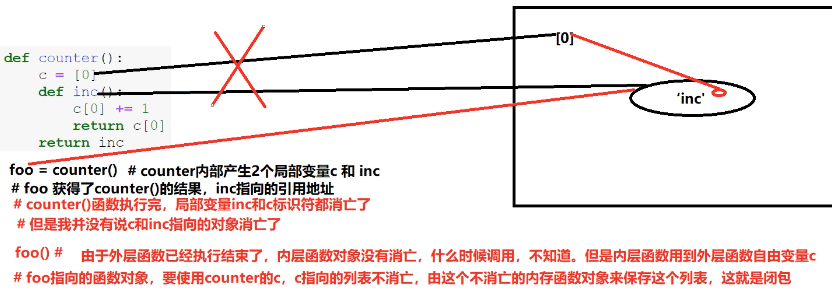
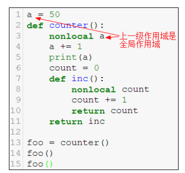
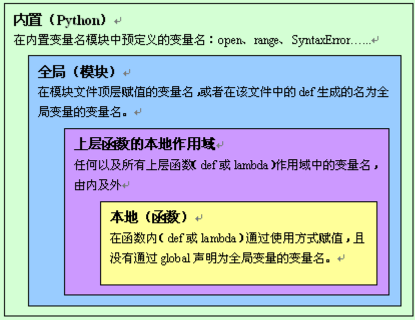
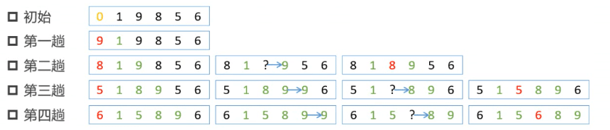
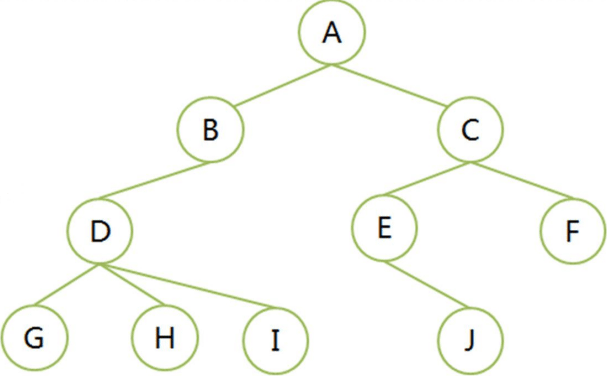
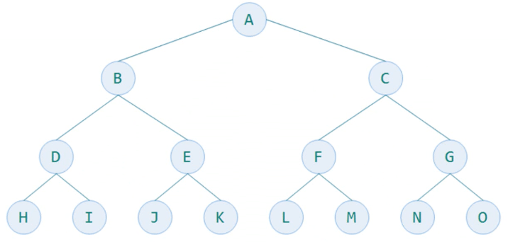
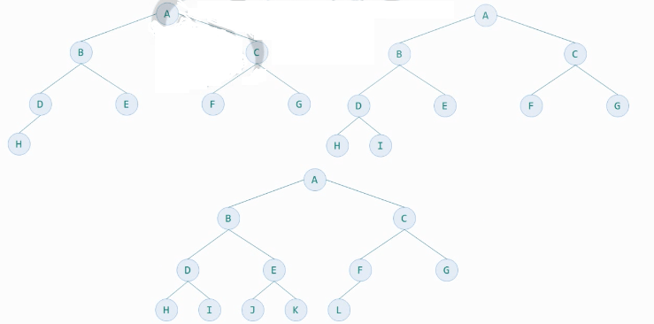
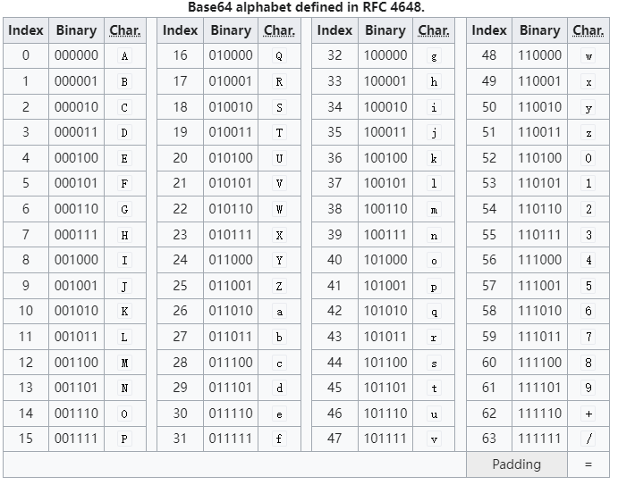
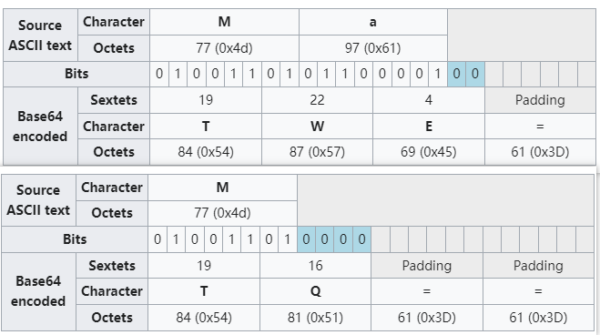

Python 面向对象
- TAGS: Python
Python 面向过程编程
主要内容：
- 函数基本概念、形参、实参
- 函数的位置参数、关键字参数、参数默认值
- 函数的可变位置参数、可变关键字参数、Keyword-only 参数
- 函数的位置传参、关键字传参、参数结构
- 函数的 Return 语句及返回值
- 嵌套函数、函数作用域、global、闭包、nonlocal
- 参数缺省值的常见问题解决办法和__defaults__
- LEGB原理
- 函数执行流程和函数调用原理
- 递归函数概念和递归性能分析
- 匿名函数 Lambda 表达式概念及应用
- 生成器对象和生成器函数及 yield from
- 高阶函数概念和内建高阶函数应用
- 函数柯里化、无参装饰器、带参装饰器
- 装饰器的副作用及解决方法
- Python 的参数注解和 Inspect 模块应用
- Python 内置全局函数使用
- Functools 模块重要函数解析
Python函数
函数
数学定义
- y=f(x) ，y是x的函数，x是自变量。y=f(x0, x1, …, xn)
Python函数
- 由若干语句组成的语句块、函数名称、参数列表构成，它是组织代码的最小单元
- 完成一定的功能
函数的作用
- 结构化编程对代码的最基本的 封装 ，一般按照功能组织一段代码
- 封装的目的为了 复用 ，减少冗余代码
- 代码更加简洁美观、可读易懂
函数的分类
- 内建函数，如max()、reversed()等
- 库函数，如math.ceil()等
- 自定义函数，使用def关键字定义
函数定义
def 函数名(参数列表): 函数体（代码块） [return 返回值]
- 函数名就是标识符，命名要求一样
- 语句块必须缩进，约定4个空格
- Python的函数若没有return语句，会隐式返回一个None值
- 定义中的参数列表称为 形式参数 ，只是一种符号表达（标识符），简称
形参
函数调用
- 函数定义，只是声明了一个函数，它不能被执行，需要调用执行
- 调用的方式，就是 函数名后加上小括号 ，如有必要在括号内填写上参数
- 调用时写的参数是 实际参数 ，是实实在在传入的值，简称
实参
def add(x, y): # 函数定义，解析器扫过这段代码后，会立即生成一个函数对象，在内存堆中，用标识符add指代 result = x + y # 函数体 return result # 返回值 out = add(4,5) # 函数调用，可能有返回值，使用变量接收这个返回值 print(out) # print函数加上括号也是调用 print(callable(add), callabel(a)) # True, False
上面代码解释：
- 定义一个函数add，及函数名是add，能接受2个形式参数
- 该函数计算的结果，通过返回值返回，需要return语句
- 调用时，通过函数名add后加2个实际参数，返回值可使用变量接收
函数名也是标识符返回值也是值- 定义需要在调用前，也就是说调用时，已经被定义过了，否则抛NameError异常
- 函数是 可调用的对象 ，callable(add)返回True
看看这个函数是不是通用的？体会一下Python函数的好处
- 所有灵活性，是有代价的，双刃剑
- python 简单，所以类型错误问题。形参和返回值都不要写明类型
- python很多问题，都会在运行中显现出来，为时已晚
函数参数
函数在定义是要定义好形式参数，调用时也提供足够的实际参数，一般来说，形参和实参个数要一致（可变参数除外）。
实参传参方式
1、位置传参
定义时def f(x, y, z)， 调用使用 f(1, 3, 5)，按照参数定义顺序传入实参
2、关键字传参
定义时def f(x, y, z)，调用使用 f(x=1, y=3, z=5)，使用形参的名字来传入实参的方式，如果使用了形参名字，那么 传参顺序就可和定义顺序不同
要求位置参数必须在关键字参数之前 传入，位置参数是按位置对应的
范例
# coding: utf-8 # 传参，调用时，传入实际参数 #传参 就2种方式： #1. 位置传参，和形参依次对应 #2. 关键字传参，按照参数名称对应，与顺序无关 #这两种可以混合使用 #位置传参，不能跟在 关键字传参之后 def add(x, y): print(x,y) return x + y #调用时，传参，传入实参的简称 result = add(4, 5) # 位置传参 print(result) #4 5 #9 add(x=4, y=5) #关键字传参keyword，按参数名称对应，与顺序无关 add(4, y=5) # 正确 #add(x=[4], y=(5,)) #add(y=5, 4) # 错误传参。位置传参，不能跟在关键字之后 print(add) #把这个标识符对应的对象的字符串表达形式给人看 print(id(add), hex(id(add))) #: <function add at 0x000002AE0CFA6280> #: 2946565300864 0x2ae0cfa6280 d = dict({'a':1}, b=2, a=3) # dict 中参数按位置传参、按关键字传参 print(d) #: {'a': 3, 'b': 2}
切记：传参指的是调用时传入实参，就2种方式。
下面讲的都是形参定义。
形参缺省值
缺省值也称为默认值，可以在函数定义时，为形参增加一个缺省值。其作用：
- 参数的默认值可以在未传入足够的实参的时候，对没有给定的参数赋值为默认值
- 参数非常多的时候，并不需要用户每次都输入所有的参数，简化函数调用
def add(x=4, y=5): return x+y 测试调用 add()、add(x=5)、add(y=7)、add(6, 10)、add(6, y=7)、add(x=5, y=6)、add(y=5, x=6)、 #add(x=5, 6)、add(11, x=20) 不能多重赋值、add(y=8, 4) 传参时缺省值在后面 能否这样定义 def add(x, y=5) 或 def add(x=4,y) ？ def add(x=4, y) 报错，缺省值在后面
范例：登录函数
# 定义一个函数login，参数名称为host、port、username、password def login(host='localhost', port=3306, username='root', password='root'): print('mysql://{2}:{3}@{0}:{1}/'.format(host, port, username, password)) login() login('127.0.0.1') login('127.0.0.1', 3361, 'wayne', 'wayne') login('127.0.0.1', username='wayne') login(username='wayne', password='wayne', host='www.xxx.com')
可变参数
需求：写一个函数，可以对多个数累加求和
def sum(iterable): s = 0 for x in iterable: s += x return s print(sum([1,3,5])) print(sum(range(4)))
上例，传入可迭代对象，并累加每一个元素。
也可以使用可变参数完成上面的函数。
def sum(*nums): sum = 0 for x in nums: sum += x return sum print(sum(1, 3, 5)) print(sum(1, 2, 3))
# coding: utf-8 def fn1(*nums): # * 可变形参，可以收多个实参，多个实参被收集到一个元组对象中，元组不可变 print(nums, type(nums)) s = 0 for x in nums: s += x return s fn1(1,2,3) # 按照位置传参 #: (1, 2, 3) <class 'tuple'> fn1() #: () <class 'tuple'>
1、可变位置参数
- 在形参前使用 * 表示该形参是可变位置参数，可以接受多个实参
- 它将收集来的实参组织到一个tuple中
2、可变关键字参数
- 在形参前使用 ** 表示该形参是可变关键字参数，可以接受多个关键字参数
- 它将收集来的实参的名称和值，组织到一个dict中
# coding: utf-8 def showconfig(**kwargs): # *args **kwargs print(type(kwargs), kwargs) # 可变关键字参数收集关键字传参，收集成字典 kv，字典可变 # 内部，你能传入变量名我们有要求，对kwargs处理，'username' in kwargs.keys()\pop(key) for k,v in kwargs.items(): print('{}={}'.format(k,v), end=', ') showconfig() #: <class 'dict'> {} showconfig(host='127.0.0.1', port=8080, username='wayne', password='xxx')
混合使用
可以定义为下列方式吗？ def showconfig(username, password, *args) # 只接受可变位置参数 def showconfig(username, password, **kwargs) # 只接受可变关键字参数 def showconfig(username, *args, **kwargs) #位置传参被args占用，关键字传参被kwargs占用 def showconfig(username, password, **kwargs, *args) # ? 报错，*args在前面 def showconfig(*args, **kwargs) # 接收所有参数
总结：
- 有可变位置参数和可变关键字参数
- 可变位置参数在形参前使用一个星号*
- 可变关键字参数在形参前使用两个星号**
- 可变位置参数和可变关键字参数都可以收集若干个实参，可变位置参数收集形成一个tuple，可变
- 关键字参数收集形成一个dict
- 混合使用参数的时候，普通参数需要放到参数列表前面，可变参数要放到参数列表的后面，可变位置参数需要在可变关键字参数之前
范例：
# coding: utf-8 def fn(x, y, *args, **kwargs): #print(x, y, args, kwargs, sep='\n', end='\n\n') print(x, y, args, kwargs) # fn() fn(range(5)) 不能，range(5) 表示一个对象 fn(1,2), fn(1,2,3), fn(1,2,3,4), fn(1, 2, a=100) #: 1 2 () {} #: 1 2 (3,) {} #: 1 2 (3, 4) {} #: 1 2 () {'a': 100} fn(3, 5, 7, 9, 10, a=1, b='abc') fn(y=5, a=5, x=4) fn(3, 5, a=1, b='abc') #fn(x=3, y=8, 7, 9, a=1, b='abc') # ? 报错， 位置传参写在关键字之前 #fn(7, 9, y=5, x=3, a=1, b='abc') # ? 摄报错，重复传参
fn(x=3, y=8, 7, 9, a=1, b='abc')，错在位置传参必须在关键字传参之前
fn(7, 9, y=5, x=3, a=1, b='abc')，错在7和9已经按照位置传参了，x=3、y=5有重复传参了
keyword-only参数
先看一段代码
# keyword-only 仅仅能关键字传参的形参 # 在 * 号后的参数 def fn(*args, x, y, **kwargs): print(x, y, args, kwargs, sep='\n', end='\n\n') fn(3, 5) # 报错 fn(3, 5, 7) # 报错 fn(3, 5, a=1, b='abc') # 报错 fn(3, 5, y=6, x=7, a=1, b='abc')
在Python3之后，新增了keyword-only参数。
keyword-only参数：在形参定义时，在一个*星号之后，或一个可变位置参数之后，出现的普通参数，就已经不是普通的参数了，称为keyword-only参数。
def fn(*args, x): print(x, args, sep='\n', end='\n\n') fn(3, 5) # 报错, 3 5 都传给args， x y 没有传参 fn(3, 5, 7) # 报错 fn(3, 5, x=7)
keyword-only参数，言下之意就是这个参数必须采用关键字传参。
可以认为，上例中，args可变位置参数已经截获了所有位置参数，其后的变量x不可能通过位置传参传入了。
思考：def fn(**kwargs, x) 可以吗？ 不可以，直接语法错误
def fn(**kwargs, x):
print(x, kwargs, sep='\n', end='\n\n')
可以认为，kwargs会截获所有关键字传参，就算写了x=5，x也没有机会得到这个值，所以这种语法不存在。
keyword-only参数另一种形式
'*' 星号后所有的普通参数都成了keyword-only参数。
def fn(*, x, y): print(x, y) fn(x=6, y=7) fn(y=8, x=9) def fn2(a, *, x, y): print(a, x, y) fn2(1, y=2, x=3) #: 6 7 #: 9 8 #: 1 3 2
Positional-only参数
Python 3.8 开始，增加了最后一种形参类型的定义：Positional-only参数。（2019年10月发布3.8.0）
/ 之前接收位置传参。
# coding: utf-8 def fn(a, /): print(a, sep='\n') fn(3) #fn(a=4) # 错误，仅位置参数，不可以使用关键字传参 def fn(a, /, b): print(a, b) fn(1, 2) fn(1, b=2) #fn(a=1, b=2) #报错 def fn(a, b=2, /): print(a, b) fn() #fn(1, b=3) #报错
范例：
# coding: utf-8 def fn(a, b, /, x, y, z=6, *args, m=4, n, **kwargs): # *号后面，只接收关键字传参。n print(a, b) print(x, y, z) print(args) print(m, n) print(kwargs) fn(1, 2, 3, 4, 5, 6, n=10) #: 1 2 #: 3 4 5 #: (6,) #: 4 10 #: {} fn(1, 2, n=20, x=5, y=6, t=10 #1 2 #5 6 6 #() #4 20 #{'t': 10}
参数的混合使用
# 可变位置参数、keyword-only参数、缺省值 def fn(*args, x=5): print(x) print(args) fn() # 等价于fn(x=5) fn(5) # 5给了args fn(x=6) fn(1,2,3,x=10)
# 普通参数、可变位置参数、keyword-only参数、缺省值 def fn(y, *args, x=5): print('x={}, y={}'.format(x, y)) print(args) fn() #报错，y 必须给 fn(5) fn(5, 6) fn(x=6) #报错，y 没给 fn(1, 2, 3, x=10) fn(y=17, 2, 3, x=10) #语法错误，关键字在后面 fn(1, 2, y=3, x=10) #错误，重复传参 fn(y=20, x=30)
# 普通参数、缺省值、可变关键字参数 def fn(x=5, **kwargs): print('x={}'.format(x)) print(kwargs) fn() fn(5) fn(x=6) fn(y=3, x=10) fn(3, y=10) fn(y=3, z=20)
参数规则
参数列表参数一般顺序是：positional-only参数、普通参数、缺省参数、可变位置参数、keyword-only参数（可带缺省值）、可变关键字参数。
注意：
- 代码应该易读易懂，而不是为难别人
- 请按照书写习惯定义函数参数
# a和b是仅位置参数，只能用在python3.8后 def fn(a, b, /, x, y, z=3, *args, m=4, n, **kwargs): print(a, b) print(x, y, z) print(m, n) print(args) print(kwargs) print('-' * 30) def connect(host='localhost', user='admin', password='admin', port='3306',**kwargs): print('mysql://{}:{}@{}:{}/{}'.format( user, password, host, port, kwargs.get('db', 'test') )) connect('127.0.0.1', 'admin', 'abcdef', debug=True, db='blog') connect(db='cmdb') # 参数的缺省值把最常用的缺省值都写好了 connect(host='192.168.1.123', db='cmdb') connect(host='192.168.1.123', db='cmdb', password='mysql')
- 定义最常用参数为普通参数，可不提供缺省值，必须由用户提供。注意这些参数的顺序，最常用的先定义
- 将必须使用名称的才能使用的参数，定义为keyword-only参数，要求必须使用关键字传参
- 如果函数有很多参数，无法逐一定义，可使用可变参数。如果需要知道这些参数的意义，则使用可变关键字参数收集
参数解构
def add(x, y): print(x, y) return x + y add(4, 5) #add((4, 5)) # 可以吗？ 不可以，元组算一个参数 t = 4, 5 add(t[0], t[1]) add(*t) # 参数解析，调用时，对实参前加入 * 号 add(*(4, 5)), add(*'ab'), add(*b'xy'), add(*[4, 5]) add(*{4, 5}) # 注意有顺序吗？ 无序 add(*range(4, 6)) add(*{'a':10, 'b':11}) # 可以吗？ 可以，相当key在解构 >3.6后记住了key的顺序，'ab' add(**{'a':10, 'b':11}) # 可以吗？ 不可以，** 是关键字解构。 #**{'x':1, 'y':2} #参数解构只能用在实参的传递的时候 add(**{'x':100, 'y':110}) # 可以吗？
参数解构：
- 在给函数提供实参的时候，可以在可迭代对象前使用 * 或者 ** 来进行结构的解构，提取出其中所有元素作为函数的实参
- 使用 * 解构成位置传参
- 使用 ** 解构成关键字传参
- 提取出来的元素数目要和参数的要求匹配
def add(*nums): result = 0 for x in nums: result += x return result add(1, 2, 3) add(*[1, 3, 5]) add(*range(5)) add(*range(5), 100, *[20]) #add(0,1,2,3,4,100,20) # 展开后传参
# 3.8以后，下面就不可以使用字典解构后的关键字传参了 def add(x, y, /): # 仅位置形参 print(x, y) return x + y add(**{'x':10, 'y':11}) #报错。 仅位置传参
函数返回值
先看几个例子
# return语句之后可以执行吗？ def showplus(x): print(x) return x + 1 print('~~end~~') # return之后会执行吗？ 执行不到 showplus(5) # 多条return语句都会执行吗 def showplus(x): print(x) return x + 1 return x + 2 # 执行不到 showplus(5) # 下例多个return可以执行吗？ def guess(x): if x > 3: return "> 3" else: return "<= 3" print(guess(10)) # 下面函数执行的结果是什么 def fn(x): for i in range(x): if i > 3: return i else: print("{} is not greater than 3".format(x)) print(fn(5)) # 打印什么？ 4 print(fn(3)) # 打印什么？ 返回None
总结
- Python函数使用return语句返回“返回值”
- 所有函数都有返回值，如果没有return语句，隐式调用return None
- return 语句并不一定是函数的语句块的最后一条语句
- 一个函数可以存在多个return语句，但是只有一条可以被执行。如果没有一条return语句被执行到，隐式调用return None
- 如果有必要，可以显示调用return None，可以简写为return
- 如果函数执行了return语句，函数就会返回，当前被执行的return语句之后的其它语句就不会被执行了
- 返回值的作用：结束函数调用、返回“返回值”
能够一次返回多个值吗？
def showvalues(): return 1, 3, 5 showvalues() # 返回了多个值吗？ 一个值
- 函数不能同时返回多个值
- return 1, 3, 5 看似返回多个值，隐式的被python封装成了一个元组
- x, y, z = showlist() 使用解构提取返回值更为方便
练习
- 编写一个函数，能够接受至少2个参数，返回最小值和最大值
- 完成一个函数，可以接收输入的多个数（命令输入，数字间隔可以使用空格或逗号），每一次都能返回到目前为止的最大值、最小值。
- 编写一个函数，能够接受至少2个参数，返回最小值和最大值
# coding: utf-8 def fn(*args): if len(args)<2: # 不优雅 raise TypeError #pass def get1(x, y, *args): #max, min return min(x, y, *args), max(x, y, *args) get1(4, 5, *range(5)) #有什么问题？ #1 遍历了2次，解决方案1次遍历 #2 解构的问题 def get2(x, y, *args): ms, *_, mx = sorted((x,y,*args)) return ms, mx get2(4, 5, *range(5)) # get1 时间复杂度为 O(2n)，get2 时间复杂度0(n^2) # 测试使用无序的参数，sorted 内部做了优化 lst= list(range(10000)) import random random.shffle(lst) random.shffle(lst) %%timeit get1(4,5,*lst) #6xxms %%timeit get2(4,5,*lst) #1s def get3(x, y, *args): ms, mx = min(args), max(args) return min(x,y,ms), max(x,y,mx) %%timeit get3(4,5,*lst) #4xxms # 一次性遍历，不依赖内建函数 def get4(x, y, *args): min_, max_ = (y, x) if x > y else (x, y) for x in args: if x > max: max_ = x elif x < min_: min_ = x return min_, max_ %%timeit get3(4,5,*lst) #3xxms
- 完成一个函数，可以接收输入的多个数（命令输入，数字间隔可以使用空格或逗号），每一次都能返回到目前为止的最大值、最小值。
# coding: utf-8 #input('>>>').replace(',', ' ').split() #列表 def double_values(): mx = ms = None while True: x = input('>>>').strip() if x == '' or x == 'quit': break nums = [int(t) for t in x.replace(',', ' ').split()] #列表，有可能是空 if nums: # 说明有成功转换的数据在列表中 if mx is None: #不但是第一次，而且第一次有数据才进来 mx = ms = nums[0] a, b = min(nums), max(nums) if b > mx: mx = b if a < ms: ms = a print(ms, mx)
返回值作用域
函数作用域***
作用域
一个标识符的可见范围，这就是标识符的作用域。一般常说的是变量的作用域
def foo(): x = 100 print(x) # 可以访问到吗
上例中x不可以访问到，会抛出异常（NameError: name 'x' is not defined），原因在于函数是一个封装，它会开辟一个 作用域 ，x变量被限制在这个作用域中，所以在函数外部x变量 不可见 。
注意： 每一个函数都会开辟一个作用域
作用域分类
- 全局作用域
- 在整个程序运行环境中都可见
- 全局作用域中的变量称为 全局变量 global
- 局部作用域
- 在函数、类等内部可见
- 局部作用域中的变量称为 局部变量 ，其使用范围不能超过其所在局部作用域
- 也称为本地作用域local
# 局部变量 def fn1(): x = 1 # 局部作用域，x为局部变量，使用范围在fn1内 def fn2(): print(x) # x能打印吗？可见吗？为什么？ print(x) # x能打印吗？可见吗？为什么？ 不可见，x 的可见范围就在fn1函数里。全局环境中没有定义x
# coding: utf-8 # 全局变量 x = 5 # 全局变量，也在函数外定义 def foo(): y = x + 1 print(x) # 可见吗？为什么？ 可见。函数局部变量，对外不可见；外部对内可见，向内穿透 print(y) foo() #: 5 #: 6
- 一般来讲外部作用域变量可以在函数内部可见，可以使用
- 反过来，函数内部的局部变量，不能在函数外部看到
函数嵌套
在一个函数中定义了另外一个函数
def outer(): def inner(): print("inner") inner() print("outer") outer() # 可以吗？ 可以 inner() # 可以吗？ 内部函数不能在外部直接使用，因为它在函数外部不可见
内部函数inner不能在外部直接使用，会抛NameError异常，因为它在函数外部不可见。
其实，inner不过就是一个标识符，就是一个函数outer内部定义的变量而已。
嵌套结构的作用域
对比下面嵌套结构，代码执行的效果
# coding: utf-8 def outer1(): o = 65 def inner(): print('inner', o, chr(o)) inner() print('outer', o, chr(o)) outer1() # 执行后，打印什么 #: inner 65 A #: outer 65 A def outer2(): o = 65 def inner(): o = 97 print('inner', o, chr(o)) inner() print('outer', o, chr(o)) outer2() # 执行后，打印什么 #: inner 97 a #: outer 65 A
从执行的结果来看：
- 外层变量在内部作用域可见
- 内层作用域inner中，如果定义了 o = 97 ，相当于在当前函数inner作用域中重新定义了一个新的变量o，但是，这个o并不能覆盖掉外部作用域outer2中的变量o。只不过对于inner函数来说，其只能可见自己作用域中定义的变量o了
| 内建函数 | 函数签名 | 说明 |
| chr | chr(i) | 通过unicode编码返回对应字符 |
| ord | ord(c) | 获得字符对应的unicode |
print(ord('中'), hex(ord('中')), '中'.encode(), '中'.encode('gbk')) chr(20013) # '中' chr(97)
一个赋值语句的问题
再看下面左右2个函数
左边函数： 正常执行，函数外部的变量在函数内部可见
右边函数： 执行错误吗，为什么？难道函数内部又不可见了？y = x + 1可以正确执行，可是为什么x += 1却不能正确执行？
仔细观察函数2返回的错误指向x += 1，原因是什么呢？
x = 5 def foo(): x += 1 foo() # 报错如下， UnboundLocalError
原因分析：
- x += 1 其实是 x = x + 1
- 只要有"x="出现，这就是赋值语句。相当于在foo内部定义一个局部变量x，那么foo内部所有x都是这个局部变量x了
- x = x + 1 相当于使用了局部变量x，但是这个x还没有完成赋值，就被右边拿来做加1操作了
x = 5 def foo(): # 函数被解释器解释，foo指向函数对象，同时解释器会理解x是什么作用域 print(x) # x 在函数解析时就被解释器判定为局部变量 x += 1 # x = x + 1 foo() # 调用时
如何解决这个常见问题？
global语句
# coding: utf-8 x = 5 def foo(): global x # 全局变量。 将x声明为全局变量 x += 1 print(x) foo() #: 6
- 使用global关键字的变量，将foo内的x声明为使用外部的全局作用域中定义的x
- 全局作用域中必须有x的定义
如果全局作用域中没有x定义会怎样？
注意，下面试验如果在ipython、jupyter中做，上下文运行环境中有可能有x的定义，稍微不注意，就测试不出效果
# 有错吗？ def foo(): global x x += 1 print(x) foo()
# 有错吗？ def foo(): global x x = 10 x += 1 print(x) foo() print(x) # 可以吗
使用global关键字定义的变量，虽然在foo函数中声明，但是这将告诉当前foo函数作用域，这个x变量将使用外部全局作用域中的x。
即使是在foo中又写了 x = 10 ，也不会在foo这个局部作用域中定义局部变量x了。
使用了global，foo中的x不再是局部变量了，它是全局变量。
总结
- x+=1 这种是特殊形式产生的错误的原因？先引用后赋值，而python动态语言是赋值才算定义，才能被引用。解决办法，在这条语句前增加x=0之类的赋值语句，或者使用global 告诉内部作用域，去全局作用域查找变量定义
- 内部作用域使用 x = 10 之类的赋值语句会重新定义局部作用域使用的变量x，但是，一旦这个作用域中使用 global 声明x为全局的，那么x=5相当于在为全局作用域的变量x赋值
global使用原则
- 外部作用域变量会在内部作用域可见，但也不要在这个内部的局部作用域中直接使用，因为函数的目的就是为了封装，尽量与外界隔离
- 如果函数需要使用外部全局变量，请尽量使用函数的形参定义，并在调用传实参解决
- 一句话： 不用global 。学习它就是为了深入理解变量作用域
闭包***
自由变量 ：未在本地作用域中定义的变量。例如定义在内层函数外的外层函数的作用域中的变量
闭包 ：就是一个概念，出现在嵌套函数中，指的是 内层函数引用到了外层函数的自由变量 ，就形成了闭包。很多语言都有这个概念，最熟悉就是JavaScript
# coding: utf-8 def counter(): c = [0] def inc(): c[0] += 1 return c[0] return inc #有意为之，就是要返回函数，函数用foo变量记住，c闭包必需保留 #出错吗？ #有闭包吗？ foo = counter() #? 可执行，不出错。foo 就是 inc，但是counter已经调用结束，内部局部变量按道理要消亡 print(foo(), foo()) #? 1 2 foo指向inc函数对象，没有被释放。c[0] 是闭包上的c c = 100 print(foo()) #? 3 foo中的c是局部变量，随着counter()函数执行完，c标识符已经消亡了
def counter(): c = [0] def inc(): c[0] += 1 # 报错吗？ 为什么 # line 4 return c[0] return inc foo = counter() # line 8 print(foo(), foo()) # line 9 c = 100 print(foo()) # line 11
上面代码有几个问题：
- 第4行会报错吗？为什么
- 第9行打印什么结果？
- 第11行打印什么结果？
代码分析
- 第8行会执行counter函数并返回inc对应的函数对象，注意这个函数对象并不释放，因为有foo记着
- 第4行会报错吗？为什么
- 不会报错，c已经在counter函数中定义过了。而且inc中的使用方式是为c的元素修改值，而不是重新定义c变量
- 第9行打印什么结果？
- 打印 1 2
- 第11行打印什么结果？
- 打印 3
- 第9行的c和counter中的c不一样，而inc引用的是自由变量正是counter中的变量c

这是Python2中实现闭包的方式，Python3还可以使用nonlocal关键字
再看下面这段代码，会报错吗？使用global能解决吗？
def counter(): count = 0 def inc(): count += 1 return count return inc foo = counter() print(foo(), foo())
上例一定出错，使用gobal可以解决
def counter(): global count count = 0 def inc(): global count count += 1 return count return inc foo = counter() print(foo(), foo()) count = 100 print(foo()) # 打印几？
上例 使用global解决，这是全局变量的实现，而不是闭包了 。
如果要对这个普通变量使用闭包，Python3中可以使用nonlocal关键字。
nonlocal语句
nonlocal：将变量标记为不在本地作用域定义，而是在 上级的某一级局部作用域 中定义，但 不能是全局作用域 中定义，否则报语法错误。
def counter(): #python3 中比较简单实现闭包方式 count = 0 def inc(): nonlocal count # 声明变量count不是本地变量 count += 1 return count return inc foo = counter() print(foo(), foo())
count 是外层函数的局部变量，被内部函数引用。
内部函数使用nonlocal关键字声明count变量在上级作用域而非本地作用域中定义。
代码中内层函数引用外部局部作用域中的自由变量，形成闭包。
def func(): nonlocal d d = 100 # 直接报语法错误，d 向外找就是全局了。nonlocal 不能找全局变量

上例是错误的，nonlocal 声明变量 a 不在当前作用域，但是往外就是全局作用域了，所以错误。 函
默认值的作用域
# coding: utf-8 def foo(x=1): x += 1 #有问题吗？没有。x= 出现了，x就是foo函数的局部变量 print(x) foo() foo() #: 2 #: 2
# coding: utf-8 def foo1(y=[]): #[]是引用类型 y.append(1) # y是局部变量，y参数不提供就使用缺省值，缺省值在哪里？保存在函数对象上 print(y) foo1() foo1() #print(y) # 报错 NameError，当前作用域没有y变量 #: [1] #: [1, 1] #不用缺省值 foo1([]) foo1([]) foo1([]) #: [1] #: [1] #: [1] #查看缺省值 print(foo1.__defaults__) #缺省值保存在元组中，元组1个元素，是列表 #: ([1, 1],)
为什么第二次调用foo函数打印的是[1,1]？
- 因为函数也是对象，python把函数的默认值放在了属性中，这个属性就伴随着这个函数对象的整个生命周期
- 查看
foo.__defaults__属性
# coding: utf-8 def foo2(x='abc', y=123, z=[1,2]): x += '~' y += 100 z.append(100) print(x, y, z) print(foo2.__defaults__) #元组和顺序有关，顺序对应形参缺省值 foo2() print(foo2.__defaults__) foo2() #: ('abc', 123, [1, 2]) #: abc~ 223 [1, 2, 100] #: ('abc', 123, [1, 2, 100]) #: abc~ 223 [1, 2, 100, 100]
属性 __defaults__ 中使用元组保存所有位置参数默认值，它不会因为在函数体内使用了它而发生改变
# coding: utf-8 def foo3(x=1, *args, m=10, n, **kwargs): print(x, m, n, args, kwargs) print(foo3.__defaults__, foo3.__kwdefaults__) # kwdeaults 使用了字典 foo3(n=200)
- 属性
__defaults__中使用元组保存所有位置参数默认值 - 属性
__kwdefaults__中使用字典保存所有keyword-only参数的默认值
# coding: utf-8 def foo4(x=[]): x += [1] print(x) print(1, foo4()) print(1, foo4()) print(foo4.__defaults__) #: [1] #: 1 None #: [1, 1] #: 1 None #: ([1, 1],) def foo5(x=[]): x = x + [1] print(x) print(1, foo5()) print(1, foo5()) print(foo5.__defaults__) #: [1] #: 1 None #: [1] #: 1 None #: ([],)
# coding: utf-8 x = [] print(1, id(x), x) x += [1] #x.extend([1]) x += [1] print(2, id(x), x) #: 1 1788996419520 [] #: 2 1788996419520 [1, 1] x = [] print(1, id(x), x) x = x + [1] # 生成一个全新的列表，覆盖x。 print(2, id(x), x) x = x + [1] print(3, id(x), x) #: 1 1788996832768 [] #: 2 1788996845440 [1] #: 3 1788996419520 [1, 1]
x += [1] 和 x = x + [1] 不一样 x += [1] 就地修改 x = x + [1] 生成一个新对象覆盖x
列表的 + 和 += 的区别：
- +表示两个列表合并并返回一个全新的列表
- +=表示，就地修改前一个列表，在其后追加后一个列表。就是extend方法
对于不可变类型 += 是什么？ 可变类型 += 又是什么？
# coding: utf-8 a = list(range(2)) print(id(a), a) a += [10] #扩展 print(id(a), a) #地址没变 a = a + [20] #生成新列表，覆盖 print(id(a), a) #地址变了 #: 2165479670400 [0, 1] #: 2165479670400 [0, 1, 10] #: 2165479656960 [0, 1, 10, 20] a = tuple(range(2)) print(id(a), a) a += (10,) #对于不可变类型元组来讲，将 += 转变为 a = a + (10,) print(id(a), a) #地址变了 a = a + (20,) print(id(a), a) #地址变了 #: 2165479670336 (0, 1) #: 2165479519936 (0, 1, 10) #: 2165479604768 (0, 1, 10, 20) x = 1 x += 1 # x += 1 => x = x + 1
对于不可变类型 += 是转变成 = + 对于可变类型 += 分为就地修改和覆盖
变量名解析原则LEGB***
- Local，本地作用域、局部作用域的local命名空间。函数调用时创建，调用结束消亡
- Enclosing，Python2.2时引入了嵌套函数，实现了闭包，这个就是嵌套函数的外部函数的命名空间
- Global，全局作用域，即一个模块的命名空间。模块被import时创建，解释器退出时消亡
- Build-in，内置模块的命名空间，生命周期从python解释器启动时创建到解释器退出时消亡。例如print(open)，print和open都是内置的变量
所以一个名词的查找顺序就是LEGB

函数的销毁
定义一个函数就是生成一个函数对象，函数名指向的就是函数对象。
可以使用del语句删除函数，使其引用计数减1。
可以使用同名标识符覆盖原有定义，本质上也是使其引用计数减1。
Python程序结束时，所有对象销毁。
函数也是对象，也不例外，是否销毁，还是看引用计数是否减为0。
| 内建函数 | 函数签名 | 说明 |
| iter | iter(iterable) | 把一个可迭代对象包装成迭代器 |
| next | next(iterable[,default]) | 取迭代器下一个元素。如果已经取完，继续取抛StopIteration异常 |
| reversed | reversed(seq) | 返回一个翻转元素的迭代器 |
| enumerate | enumerate(seq,start=0) | 迭代一个可迭代对象，返回一个迭代器。每一个元素都是数字和元素构成的二元组 |
迭代器
- 特殊的对象，一定是可迭代对象，具备可迭代对象的特征
- 通过iter方法把一个可迭代对象封装成迭代器
- 通过next方法，获取 迭代器对象的一个元素
- 生成器对象，就是迭代器对象。但是迭代器对象未必是生成器对象
可迭代对象
- 能够通过迭代一次次返回不同的元素的对象
- 所谓相同，不是指值是否相同，而是元素在容器中是否是同一个，例如列表中值可以重复的，['a', 'a']，虽然这个列表有2个元素，值一样，但是两个'a'是不同的元素
- 可以迭代，但是未必有序，未必可索引
- 可迭代对象有：list、tuple、string、bytes、bytearray、range、set、dict、生成器、迭代器等
- 可以使用成员操作符in、not in
- 对于线性数据结构，in本质上是在遍历对象，时间复杂度为O(n)
lst = [1, 3, 5, 7, 9] it = iter(lst) # 返回一个迭代器对象 print(next(it)) print(next(it)) for i, x in enumerate(it, 2): print(i, x) #print(next(it)) # StopIteration print() for x in reversed(lst): print(x) # 比较下面的区别，说明原因？ it = iter(lst) print(1 in it) print(1 in it) print(1 in lst) print(1 in lst)
匿名函数
python 中，使用 Lambda表达式构建匿名函数。
lambda : 0
# coding: utf-8 fn = lambda : 0 # python 不太推荐 def fn(x): x += 1 return x def fn(x): return x + 1 fn = lambda x: x + 1 # lambda中不能出现=，更不能出现 return，冒号后是一个表达式，表达式计算的结果作为该匿名函数的返回值 def add(x, y): return x + y print( (lambda x,y: x + y)(4, 5) ) print( (lambda x,y=2: x + y)(x=3) ) print( (lambda *,x,y: x + y)(x=3,y=5) ) # lambda表达式，一般不这样用，用在高阶函数中。 #: 9 #: 5 #: 8 #print( [lambda *args: args](4, 5, 6) ) #报错 print( [lambda *args: args][0](4, 5, 6) ) #: (4, 5, 6) g = (lambda *args: (x for x in args))(1,2,3) #生成器对象 print(next(g)) print(next(g)) #: 1 #: 2 import random g2 = (lambda *args: {x%3 for x in args})(*[random.randint(1, 1000) for i in range(5)]) # 集合set会去重 print(g2)
lambda函数应用：
- 高阶函数
# coding: utf-8 # 字符串比较 s = sorted(['a', 1, 'b', 12, 'c', 28], key=str) #对每一个元素做str(item)，接收一个参数，返回一个字符串 print(s) #: [1, 12, 28, 'a', 'b', 'c'] s = sorted(['a', 1, 'b', 12, 'c', 28], key=lambda item: str(item)) print(s) #: [1, 12, 28, 'a', 'b', 'c'] #16进制比较大小 def a(x): return int(x, 16) if isinstance(x, str) else x s = sorted(['a', 1, 'b', 12, 'c', 28], key=a) print(s) #: [1, 'a', 'b', 12, 'c', 28] s = sorted(['a', 1, 'b', 12, 'c', 28], key=lambda x: int(x, 16) if isinstance(x, str) else x) print(s) #: [1, 'a', 'b', 12, 'c', 28] print(int('a', 16)) #将16进制数 a 转变为10进制数，为10
# coding: utf-8 from collections import defaultdict d = defaultdict(list) d[0].extend((1,2,3)) print(d) #: defaultdict(<class 'list'>, {0: [1, 2, 3]}) #等价于 from collections import defaultdict d = defaultdict(lambda :[]) # (lambda :[])() d[0].extend((1,2,3)) #: 0:[] (lambda :list())() => [] print(d) #: defaultdict(<function <lambda> at 0x00000297BC826280>, {0: [1, 2, 3]})
- 使用lambda关键字定义匿名函数，格式为
lambda [参数列表]: 表达式 - 参数列表不需要小括号。无参数就不写
- 冒号用来分割参数列表和表达式部分
- 不需要使用return。表达式的值，就是匿名函数的返回值。表达式中不能出现等号
- lambda表达式(匿名函数) 只能写在一行上 ，也称为单行函数
递归函数
函数执行流程
函数的活动和栈有关。
栈是后进先出的数据结构。
栈是从底向顶端生长，栈中插入数据称为压栈、入栈，从栈顶弹出数据称为出栈。
C语言中，每个栈帧对应着一个未运行完的函数。栈帧中保存了该函数的返回地址和局部变量。
函数的每一次调用都会创建一个独立的栈帧(Stack Frame)入栈。
因此，可以得到这样一句 不准确 的话： 哪怕是同一个函数两次调用，每一次调用都是独立的，这两次调用没什么关系。
注： 函数执行过程辅助网站： http://pythontutor.com/visualize.html，请不要过分依赖这个网站
# coding: utf-8 def foo1(b, b1=3): print("foo1 called", b, b1) def foo2(c): foo3(c) print("foo2 called", c) def foo3(d): print("foo3 called", d) def main(): print("main called") foo1(100,101) foo2(200) print("main ending") main() #: main called #: foo1 called 100 101 #: foo3 called 200 #: foo2 called 200 #: main ending
栈
foo3 foo2 main <moudule>
递归
RECURSION
- 函数直接或者间接调用自身就是递归
- 递归需要有边界条件、递归前进段、递归返回段
- 递归一定要有
边界条件 - 当边界条件不满足的时候，递归前进
- 当边界条件满足的时候，递归返回
斐波那契数列递归
斐波那契数列Fibonacci number: 1, 1, 2, 3, 5, 8, 13,…
如果设F(n) 为该数列的第n项( \(n \epsilon n^*\) )，那么这句话可以写成如下形式：F(n)=F(n-1)+F(n-2)
有F(0)=0, F(1)=1, F(n)=F(n-1)+F(n-2)
# coding: utf-8 def fib(n): #a, b = 1, 1 a = b = 1 for i in range(n-2): #fib(3) 循环一下 a, b = b, a+b return b print(fib(3))
使用递归
def fib2(n): #递归 return fib2(n-1) + fib2(n-2) # 递归必需有边界，因为栈空间有限。 fib(3) # RecursionError 递归异常，maximum recursion depth exceeded, 递归层次太深 # 栈超界，Python 中为了防止栈溢出，提供了调用深度限制，默认1000，IPython 3000
# coding: utf-8 def fib2(n): #递归 if n < 3: return 1 return fib2(n-1) + fib2(n-2) # 递归必需有边界，因为栈空间有限 print(fib2(3))
递归要求
- 递归一定要有退出条件，递归调用一定要执行到这个退出条件。没有退出条件的递归调用，就是无限调用
- 递归调用的深度不宜过深
- Python 对递归调用的深度做了限制，以保护解释器
- 超过递归深度限制，抛出RecursionError: maxinum recursion depth exceeded 超出最大深度
- sys.getrecursionlimit() 查看深度限制
递归效率
- 循环稍微复杂一些，但是只要不是死循环，可以多次迭代直至算出结果。
- fib函数代码极简易懂，但是只能获取到最外层的函数调用，内部递归结果都是中间结果。而且给定一个n都要进行近2n次递归，尝试越深，效率越低。为了获取斐波那契数列需要外面在套一个n次的循环就是更低了。
- 递归还有深度限制，如果递归复杂，函数反复压栈，栈内存很快溢出了。
思考：这个极简的递归代码能否提高性能呢？？
# coding: utf-8 def fib_v3(n, a=1, b=1): #用递归调用次数来模拟循环次数 if n < 3: return b # 累计计算结果 a, b = b, a+b return fib_v3(n-1, a, b) def fib_v3(n, a=1, b=1): #用递归调用次数来模拟循环次数 if n < 3: return b # 累计计算结果 return fib_v3(n-1, b, a+b) def fib_v3(n, a=1, b=1): #用递归调用次数来模拟循环次数 if n < 3: return b # 累计计算结果 else: return fib_v3(n-1, b, a+b) def fib_v3(n, a=1, b=1): #用递归调用次数来模拟循环次数 if n < 3: return b # 累计计算结果 return b if n<3 else fib_v3(n-1, b, a+b) for i in range(3, 10): print(i, fib_v3(i)) #: 3 2 #: 4 3 #: 5 5 #: 6 8 #: 7 13 #: 8 21 #: 9 34
def fib(n):
#a, b = 1, 1
a = b = 1
for i in range(n-2): #fib(3) 循环一下
a, b = b, a+b
return b
def fib_v3(n, a=1, b=1): #用递归调用次数来模拟循环次数
if n < 3:
return b # 累计计算结果
return b if n<3 else fib_v3(n-1, b, a+b)
%%timeit n=101
fib(n) # 8.62us
%%timeit n=101
fib_v3(n) #28.5us 时间消耗在压栈
间接递归
def foo1(): foo2() def foo2(): foo1() foo1()
间接递归调用，是函数通过别的函数调用了自己，这样是递归。
只要是递归调用，不管是直接还是间接，都要注意边界返回问题。但是间接递归调用有时候是非常明显，代码调用复杂时，很难发现出现了递归调用，这是非常危险的。
所以，使用良好的代码规范来避免这种递归的发生。
总结
- 递归是一种很自然的表达，符合逻辑思维
- 递归相对运行效率低，每一次调用函数都要开辟栈帧
- 递归有深度限制，如果递归层次太深，函数连续压栈，栈内存很快就溢出了
- 如果是有限次数的递归，可以使用递归调用，或者使用循环代替，循环代码稍微复杂一些，但是只要不是死循环，可以多次迭代直至算出结果
- 即使递归代码很简洁，但是 能不用则不用递归
练习
使用递归实现
- 求n的阶乘
- 将一个数逆序放入列表中，例如1234 => [4,3,2,1]
解决猴子吃桃问题
猴子第一天摘下若干个桃子，当即吃了一半，还不过瘾，又多吃了一个。第二天早上又将剩下的桃子吃掉一半，又多吃了一个。以后每天早上都吃了前一天剩下的一半零一个。到第 10 天早上想吃时，只剩下一个桃子了。求第一天共摘多少个桃子。
递归的解法，一般来说有2种：
- 一种如同数学公式
- 一种类似循环，相当于循环的改版，将循环迭代，变成了函数调用压栈
求n的阶乘
# coding: utf-8 #阶乘公式。三元表达式 def factorial(n): # if n == 1: # return 1 # elif n == 2: # return 2 # if n == 2: # return 2 if n < 3: return n return n * factorial(n-1) #公式 def factorial(n): return n if n < 3 else n * factorial(n-1) print(factorial(3)) #循环 def factorial(n=6): p = 1 for i in range(1, n+1): p *= i return p def factorial(n=6, p=1): #将上次结果带入 if n == 1: return p return factorial(n-1, p * n) def factorial(n=6, p=1): #将上次结果带入 return p if n == 1 else factorial(n-1, p * n) print(factorial(6))
解决猴子吃桃问题
猴子第一天摘下若干个桃子，当即吃了一半，还不过瘾，又多吃了一个。第二天早上又将剩下的桃子吃掉一半，又多吃了一个。以后每天早上都吃了前一天剩下的一半零一个。到第 10 天早上想吃时，只剩下一个桃子了。求第一天共摘多少个桃子。
# coding: utf-8 #循环版本 def peach(): total = 1 for i in range(9): total = 2*(total + 1) return total #递归 def peach(days=10): if days == 1: return 1 return 2 * (peach(days-1) + 1) print(peach()) #: 1534
注意这里必须是10
从10到2做了9次， return(peach(days-1) +1)*2 计算，但是还没有边界，再进入函数后立即触发等于1条件返回，所以实际上执行了9次计算，第10次只是为了进函数触发反弹的。
换种方式表达
# coding: utf-8 def peach(days=1): if days == 10: return 1 return 2 * (peach(days+1) +1) print(peach()) #第10下只是为了进入函数解底反弹的 def peach(days=9, p=1): if days == 0: return p return peach(days-1, 2*(p+1))
将一个数逆序放入列表中
例如1234 => [4,3,2,1]
# coding: utf-8 #内建函数实现 print(list(map(int, reversed(str(1234))))) #: [4, 3, 2, 1] x = 1234 while x != 0: x, y = divmod(x, 10) print(x, y) print(y, '~~') #字符串递归切片 x = str(1234) def revert(data): if not data: return [] return [data[-1]] + revert(data[:-1]) print(revert(x)) #['4', '3', '2', '1'] #字符串 x = str(1234) target = [] def revert(data): if not data: return target.append(data[-1]) return revert(data[:-1]) revert(x) print(target) #['4', '3', '2', '1'] del target #字符串 x = str(1234) #target = [] def revert(data, target=[]): if not data: return target target.append(data[-1]) return revert(data[:-1], target) print(revert(x)) #['4', '3', '2', '1'] #数值 x = 123045 x = 100 def revert(data, target=[]): if data == 0: return target x, y = divmod(data, 10) #10 0; 1 0; 0 1 target.append(y) return revert(x, target) print(revert(x)) #数值 x = 123045 def revert(data, target=None): if target is None: target = [] if data == 0: return target x, y = divmod(data, 10) #10 0; 1 0; 0 1 target.append(y) return revert(x, target) print(revert(x)) print(revert(x, None)) #[5, 4, 0, 3, 2, 1]
扁平化字典
例如，源字典 {'a':{'b':1, 'c':2}, 'd':{'e':3, 'f':{'g':4}}} 目标字典 {'a.c':2, 'd.e':3, 'd.f.g':4, 'a.b':1}
# coding: utf-8 d = {'a':{'b':1, 'c':2}, 'd':{'e':3, 'f':{'g':4}}} target = {} def flat_map(src:dict): # :dict参数注解，说明src的类型，但不强制 for k, v in src.items(): print(k) if isinstance(v, dict): print(v, 'recursion') flat_map(v) else: target[k] = v print(flat_map(d)) print(target) #{'b': 1, 'c': 2, 'e': 3, 'g': 4} #改进 d = {'a':{'b':1, 'c':2}, 'd':{'e':3, 'f':{'g':4}}} #d = {'h': 5} #d = {'a': {'b':1}} #d = {'d': {'f':{'g':4}}} target = {} def flat_map(src:dict, prefix=''): # :dict参数注解，说明src的类型，但不强制 for k, v in src.items(): if isinstance(v, dict): flat_map(v, prefix + k + '.') else: target[prefix + k] = v print(flat_map(d)) print(target) #None #{'a.b': 1, 'a.c': 2, 'd.e': 3, 'd.f.g': 4} del target #改进 d = {'a':{'b':1, 'c':2}, 'd':{'e':3, 'f':{'g':4}}} #target = {} def flat_map(src:dict, target=None, prefix=''): # :dict参数注解，说明src的类型，但不强制 if target is None: target = {} for k, v in src.items(): if isinstance(v, dict): flat_map(v, target, prefix + k + '.') else: target[prefix + k] = v return target print(flat_map(d)) #{'a.b': 1, 'a.c': 2, 'd.e': 3, 'd.f.g': 4} #改进，使用都只需要传入一个参数就够了 d = {'a':{'b':1, 'c':2}, 'd':{'e':3, 'f':{'g':4}}} def flat_map(src:dict): # :dict参数注解，说明src的类型，但不强制 target = {} def _flat(s:dict, prefix=''): for k, v in s.items(): if isinstance(v, dict): _flat(v, prefix + k + '.') else: target[prefix + k] = v _flat(src) return target print(flat_map(d)) #{'a.b': 1, 'a.c': 2, 'd.e': 3, 'd.f.g': 4}
排序算法-直接插入排序
- 插入排序
- 每一趟都要把待排序数放到有序区中合适的插入位置

开头的红色数字为哨兵，即待插入值 从第二个数字开始排序即9 第一趟，哨兵9，1和哨兵比较，1小，哨兵插入，本轮比较结束。1,9有序区，后面为无序区 第二趟，哨兵8，9和哨兵比较，大于哨兵9右移，1和哨兵比较，1小，哨兵插入本轮结束 以此类推，直至把最后一个数字入到哨兵并比较、插入完成
核心算法
- 结果可为升序或降序排列，默认升序排列。以升序为例
- 扩大有序区，减小无序区。图中绿色部分就是增大的有序区，黑色部分就是减小的无序区
- 增加一个哨兵位，图中最左端红色数字，其中放置每一趟待比较数值
- 将哨兵数值与有序区数值从右到左依次比较，找到哨兵位数值合适的插入点
算法实现
- 增加哨兵位
- 为了方便，采用列表头部索引 0 位置插入哨兵位
- 每一次从有序区最右端后的下一个数，即无序区最左端的数放到哨兵位
- 比较与挪动
- 从有序区最右端开始，从右至左依次与哨兵比较
# coding: utf-8 nums = [1, 9, 8, 5, 6] import random random.shuffle(nums) print(nums) nums = [None] + nums # 前面加哨兵位 print(nums, nums[1:]) length = len(nums) count_move = 0 for i in range(2, length): # 拿一个持排序数 nums[0] = nums[i] # 索引0位哨兵，索引1位假设的有序区，都跳过 # 和有序区最右端开始比较，直到合适位置插入 j = i - 1 # j = 2 [8, 1, 9, 8] i左边的那个数就是有序区末尾 if nums[j] > nums[0]: #如果最右端数大于哨兵才需要挪动和插入 while nums[j] > nums[0]: # 写挪动 nums[j+1] = nums[j] #[8,1,?,9] j -= 1 #继续向左 count_move += 1 nums[j+1] = nums[0] # [8,1,8,9] 循环中多减了一次j print(nums[1:], count_move)
总结
- 最好情况，正好是升序排列，比较迭代n-1次
- 最差情况，正好是降序排列，比较迭代1,2,…,n-1即n(n-1)/2，数据移动非常多
- 使用两层嵌套循环，时间复杂度O(n^2)，不要在大规模数据分析使用
- 稳定排序算法
- 如果待排序序列R中两元素相等，即Ri等于Rj，且i<j，那么排序后这个先后有顺序不变，这种排序算法就称为稳定排序
- 已经学习过的排序算法哪些是稳定排序，考虑1、1、2排序
- 优化
- 如果比较操作耗时大的话，可以采用二分查找来提高效率，即二分查找插入排序
排序稳定性
- 冒泡排序，相同数据不交换，稳定
- 直接选择排序，相同数据前面的先选择到，排到有序区，不稳定
- 直接插入排序，相同数据不移动，相对位置不变，稳定
生成器***
生成器generator
- 生成器指的是生成器对象，可以由生成器表达式得到，也可以使用yield关键字编写一个生成器函数， 调用这个函数得到一个生成器对象
- 生成器对象，是一个可迭代对象，是一个迭代器
- 生成器对象，是延迟计算、惰性求值的
生成器函数
- 函数体中包含yield语句的函数，就是生成器函数，调用后返回生成器对象
# coding: utf-8 m = (i for i in range(5)) print(next(m)) print(next(m)) print(next(m)) #: 0 #: 1 #: 2 def foo(): # 只要有yield都算生成器函数，每一次生成器函数调用都会产生一个全新的生成器对象 for i in range(5): yield i #遇到yield后，把yield后的值返回出去，同时暂停当前函数执行 print(foo()) print(next(foo())) print(next(foo())) print(next(foo())) #: <generator object foo at 0x000001CB449BBCF0> #: 0 #: 0 #: 0 n = foo() print(next(n)) print(next(n)) #: 0 #: 1 for i in n: print(i) #2 #3 #4 for i in n: print(i) #没报错 print(type(foo), type(foo())) #<class 'function'> <class 'generator'>
普通函数调用，函数立即执行直到执行完毕。
生成器函数调用，并不会立即执行函数体，而是返回一个生成器对象，需要使用next函数来驱动这个生成器对象，或者使用循环来驱动。
生成器表达式和生成器函数都可以得到生成器对象，只不过生成器函数可以写更加复杂的逻辑。
生成器函数的执行
# coding: utf-8 def foo(): print(1) yield 2 print(3) yield 4 print(5) yield 6 return 7 yield 8 g = foo() # g 是生成器对象 print(g) print(next(g)) #no1 打印什么，返回什么。打印1，返回2 print(next(g)) #no2 打印什么，返回什么。打印3，返回4 print(next(g)) #no3 打印什么，返回什么。打印5，返回6 #print(next(g)) #no4 打印什么，返回什么。报错StopIteration，return 的7拿不到，return 函数完结了。 print(next(g, 'end')) #next 迭代器不希望报错，就给缺省值 #: <generator object foo at 0x0000027FE1AC5E40> #: 1 #: 2 #: 3 #: 4 #: 5 #: 6 #: end
# coding: utf-8 def foo2(): print(111) yield 'abc' print(222) yield #什么都不写相当于 return g = foo2() print(g) print(next(g)) print(next(g)) #print(next(g)) 报错StopIteration #: <generator object foo2 at 0x00000220BC1F5E40> #: 111 #: abc #: 222 #: None
- 在生成器函数中，可以多次yield，每执行一次yield后会暂停执行，把yield表达式的值返回
- 再次执行会执行到下一个yield语句又会暂停执行
- 函数返回
- return 语句依然可以终止函数运行，但return语句的返回值不能获取到
- return会导致当前函数返回，无法继续执行，也无法继续获取下一个值，抛出StopIteration异常
- 如果函数没有显示的return语句，如果生成器函数执行到结尾(相当于执行了return None)，一样会抛出StopIteration异常
生成器函数
- 包含yield语句的生成器函数调用后，生成生成器对象的时候， 生成器函数的函数体不会立即执行
- next(generator)会从函数的当前位置向后执行到之后碰到的第一个yield语句，会弹出值，并暂停函数执行
- 再次调用next函数，和一条一样的处理过程
- 继续调用next函数，生成器函数如果结束执行了(显示或隐式调用了return语句)，会抛出StopIteration异常
生成器应用
无限循环
# coding: utf-8 def counter(): i = 0 while True: i += 1 yield i c = counter() # c generator object print(next(c)) #: 1 for i in range(5): print(i, next(c)) #: 0 2 #: 1 3 #: 2 4 #: 3 5 #: 4 6
# coding: utf-8 def counter(): def inc(): i = 0 while True: i += 1 yield i c = inc() return next(c) g = counter() # function print(g) print(g) #: 1 #: 1
计数器
# coding: utf-8 def counter(): def inc(): i = 0 while True: i += 1 yield i c = inc() def fn(): return next(c) #有闭包，c对应的对象不能释放 return fn foo2 = counter() # 返回什么 print(foo2()) print(foo2()) #: 1 #: 2
# coding: utf-8 def counter(): def inc(): i = 0 while True: i += 1 yield i c = inc() # def fn(): # return next(c) #有闭包，c对应的对象不能释放 # return fn return lambda : next(c) f = counter() # 返回什么 print(f()) print(f()) print(f()) #: 1 #: 2 #: 3
斐波那契数列
# coding: utf-8 def fib(): a = 0 b = 1 yield b while True: a, b = b, a+b yield b f = fib() for i in range(5): print(i+1, next(f)) #: 1 1 #: 2 1 #: 3 2 #: 4 3 #: 5 5
生成器交互
python 还提供了一个和生成器对象交互的方法send，该方法可以和生成器沟通。
# coding: utf-8 def bar(): for i in range(3): x = yield 100 print(x, '+++') g = bar() print(next(g)) # 不打印，返回100。yield 100 抛出后，暂停了。next 函数只能驱动迭代器 print(next(g)) #打印None +++，返回100 print(next(g)) #打印None +++，返回100 #print(next(g)) #打印None +++，报错 StopIteration g = bar() print(next(g)) print(g.send(1)) #打印1 +++，返回100。驱动，send的实参作为yield语句的表达式的返回值 print(g.send('abc')) #打印abc +++，返回100
# coding: utf-8 def counter(): def inc(): i = 0 while True: i += 1 response = yield i if response is not None: i = response c = inc() def fn(reset=False): return c.send(0) if reset else next(c) return fn g = counter() print(g) print(g()) print(g(True)) # 重置 i = 0 #: <function counter.<locals>.fn at 0x0000029F98069550> #: 1 #: 1 print(g()) #: 2
# coding: utf-8 def counter(): def inc(): i = 0 while True: i += 1 response = yield i if response is not None: i = response c = inc() # def fn(reset=False): # return c.send(0) if reset else next(c) # return fn return lambda reset=False, start=0: c.send(start) if reset else next(c) g = counter() print(g) print(g()) print(g(True)) # 重置 i = 0 print(g()) #: <function counter.<locals>.<lambda> at 0x000002A189F39550> #: 1 #: 1 #: 2
- 调用send方法，就可以把send的实参传给yield语句做结果，这个结果可以在等式右边被赋值给其它变量
- send和next一样可以推动生成器启动并执行
协程Coroutine
- 生成器的高级用法
- 它比进程、线程轻量级，是在用户空间调度函数的一个实现
- python3 asyncio就是协程实现，已经加入到标准库
- python3.5使用async、await关键字直接原生支持协程
协程调度器实现思路
有2个生成器A、B
next(A)后，A执行到了yield语句暂停，然后去执行next(B)，B执行到yield语句也暂停，然后再次调用next(A)，再试用next(B)在，周而复始，就实现了调度的效果
可以引入调度的策略实现切换的方式
- 协程是一种非抢占式调度
yield from语法
从python3.3开始增加了yield from语法，使用 yield from iterable 等价于 for item in iterable
yield from就是一个简化语法的语法糖。
# coding: utf-8 def foo(): for i in range(5): #对一个可迭代对象range对象进行yield它的每一个元素 yield i #等价于 def foo(): yield from range(5) g = foo() print(g) print(next(g)) print(next(g)) #: <generator object foo at 0x00000284F5655E40> #: 0 #: 1
树
树
定义： 树是非线性结构，是n个(n>=0)元素的集合
n为0时，称为空树
树中只有一个特殊的没有前驱的元素，称为树的根Root。
树中除了根结点外，其余元素只能有 一个前驱 ，可以有零个或多个后继。如果有多个前驱就不是树了，而是图。
递归定义：树T是n(n>=0)个元素的集合。n=0时，称为空树。
有且只有一个特殊元素根，剩余元素都可以被划分为m个互不相交的集合T1、T2、T3、…、Tm，而每一个集合都是树，称为T的子树Subtree。
子树也有自己的根。
名词解释
- 结点：树中的数据元素
- 结点的度degree：结点拥有的子树的数目称为度，记作d(v)
- 叶子结点：结点的度为0，称为叶子结点leaf、终端结点、末端结点
- 分支结点：结点的度不为0，称为非终端结点或分支结点
- 分支：结点之间的关系
- 内部结点：除根结点外的分支结点，当然也不包含叶子结点
- 树的 度 是树内各结点的度的最大值。D结点度最大为3，树的度数就是3

A,B,C,D,E,F,G,H,I,j 都叫树的结点 结点有度数，结点分几个叉就是几度。如A结点分2叉，度数为2 G,H,I,J,F都是叶子结点，它们度数为0，没有子结点 结点之间的关系，B是A的分支 内部结点，在根结点和叶子结点之间的部分 树的度数，树内哪个结点的度数最大就是树的度数。
- 孩子(儿子Child)结点：结点的子树的根结点称为结点的孩子
- 双亲(父Parent)结点：一个结点是它各子树的根结点的双亲
- 兄弟(Sibling)结点：具有相同双亲结点的结点
- 祖先结点：从根结点到该结点所经分支上所有结点。A、B、D都是G的祖先结点
- 子孙结点：结点的所有子树上的结点都称为该结点的子孙。B的子孙是D,G,H,I
- 结点的层次(Level)：根节点为第一层，根的孩子为第二层，以此类推，记作L(v)。如A第一层，B,C第二层，D,E,F第三层
- 树的深度(高度Depth)：树的层次的最大值。上图的树深度为4
- 堂兄弟：双亲在同一层的结点
- 有序树：结点的子树是有顺序的（兄弟有大小，有先后次序），不能交换。
- 无序树：结点的子树是有无序的，可以交换。
- 路径：树中k个结点n1,n2,…,nk，满足ni是n(i+1)的双亲，成为n1到nk的一条路径。就是一条线串下来的，前一个都是后一个的父(前驱)结点。如A,B,D,I一条路径
- 路径长度=路径上结点数-1，也是分支数。如A,B,D,I一条路径，路径长度为3
- 森林：m(m>=0)棵不相交的树的集合
- 对于结点而言，其子树的集合就是森林。A结点的2棵子树的集合就是森林。
特点
- 唯一的根
- 子树不相交
- 除了根以外，每个元素只能有一个前驱，可以有零个或多个后继
- 根结点没有双亲结点(前驱)，叶子结点没有孩子结点(后继)
- vi是vj的双亲，则L(vi)=L(vj)-1，也就是说双亲比孩子结点的层次小1
堂兄弟的双亲是兄弟关系吗？
堂兄弟定义是，双亲结点是同一层的节点。上图G和J是堂兄弟，因为他们的双亲结点D和E在第三层，依然是堂兄弟。因此，堂兄弟的双亲不一定是兄弟关系。
二叉树
概念
- 每个结点最多2棵子树
- 二叉树不存在度数大于2的结点
- 它是有序树，左子树、右子树是顺序的，不能交换次序
- 即使某个结点只有一棵子树，也要确定它是左子树还是右子树
二叉树的五种基本形态：
- 空二叉树
- 只有一个根结点
- 根结点只有左子树
- 根结点只有右子树
- 根结点有左子树和右子树
斜树
左斜树，所有结点都只有左子树；右斜树，所有节点都只有右子树
满二叉树
- 一棵二叉树的所有分支结构都存在左子树和右子树，并且所有叶子结点只存在在最下面一层
- 同样深度二叉树中，满二叉树结点最多
- k为深度( \(1 \leq k \leq n\) )，则结点总数为 \(2^k - 1\)
- 如下图，一个深度为4的15个结点的满二叉树

完全二叉树
完全二叉树Complete Binary Tree
- 若二叉树的深度为k，二叉树的层数人1到k-1层的结点数都达到了最大个数，在第k层的所有结点都集中在最左边，这就是完全二叉树
- 完全二叉树由满二叉树引出
- 满二叉树一定是完全二叉树，但完全二叉树不一定是满二叉树
- k为深度( \(1 \leq k \leq n\) )，则结点总数最大值为 \(2^k -1\) ，当达到最大值的时候就是满二叉树
下图三个树都是完全二叉树，最下一层的叶子结点都连续的集中在左边

性质
- 性质1：在二叉树的第i层上至多有 \(2^(i-1)\) 个结点(i>=1)
- 性质2：深度为k的二叉树，至多有 \(2^k -1\) 个结点(k>=1)
- 一层 2-1 = 1
- 二层 4-1 = 1+2 = 3
- 三层 8-1 = 1+2+4 = 7
- 性质3：对任何一棵二叉树T，如果其终端结点数为n0，度数为2的结点为n2，则有n0=n2+1
- 换句话说，就是叶子结点数-1就等于度数为2的结点数
- 证明
- 总结点数为n=n0+n1+n2，n1为度数为1的结点总数
- 一棵树的分支数为n-1，因为除了根结点外，其余结点都有一个分支，即n0+n1+n2-1
- 分支数还等于
n0*0+n1*1+n2*2，n2是2分支结点所以乘以2，2*n2+n1 - 可得2*n2+n1=n0+n1+n2-1 => n2 = n0-1
其他性质：
- 高度为k的二叉树，至少有k个结点
- 含有n (n>=1) 的结点的二叉树高度至多为n。和上句一个意思
- 含有n (n>=1) 的结点的二叉树高度至多为n，最小为math.cel( \(log_2(n+1)\) )，不小于对数值的最小整数，向上取整
- 假设高度为h，2^h-1 = n => h = \(log_2(n+1)\) ，层次数是取整。如果是8个节点，3.1699就要向上取整为4，为4层
- 性质4：具有n个结点的完全二叉树的深度为 \(int(log_2n)+1\) 或者math.cel( \(log_2(n+1)\) )
- 性质5：
- 如果有一棵n个结点的完全二叉树(深度为性质4)，结点按照层序编号
- 如果i=1，则结点i是二叉树的根，无双亲；如果i>1，则其双亲是int(i/2)，向下取整。就是子节点的编号整除2得到的就是父结点的编号。父结点如果是i，那么左孩子结点就是2i，右孩子结点就是2i+1
- 如果2i>n，则结点i无左孩子，即结点i为叶子结点；否则其左孩子结点在编号为2i
- 如果2i+1>n，则结点i无右孩子，注意这里并不能说明结点i没有孩子；否则右孩子结点存在
高阶函数与柯里化
高阶函数
一等公民
- 函数在Python是一等公民(First-Class Object)
- 函数也是对象，是可调用对象
- 函数可以作为普通变量，也可以作为函数的参数、返回值
高阶函数
高阶函数(High-order Function)
- 数学概念 y = f(g(x))
- 在数学和计算科学中，高阶函数应当是至少满足下面一个条件的函数
- 接受一个或多个函数作为参数
- 输出一个函数
# coding: utf-8 def abc(): pass print(abc, type(abc), abc.__name__) #abc.__name__ 表示abc的名字是什么？是一个字符串。type(abc)中abc是标识符 #: <function abc at 0x0000020652EA6280> <class 'function'> abc
观察下面的函数定义，回答问题
# coding: utf-8 def counter(base): def inc(step=1): base += step return base return inc #1 是高阶函数吗？为什么。是，return inc 输出函数 #2 有没有嵌套函数，有闭包吗？base += step,用到base，因为base是形参，形参就是局部变量 #3 代码对吗？如果不对，怎么改。不对 def counter(base): def inc(step=1): nonlocal base #声明base不是本地变量 base += step return base return inc c = counter(10) print(c()) #: 11 #4 f1 == f2? f1 = counter(10) #f1 -> inc 所指向的对象，inc标识符随着counter调用结束而消亡 #inc所指向 f2 = counter(10) print(f1 == f2) #函数没法比较内容，代表f1 is f2 print(f1 is f2) #: False #: False
sorted函数原理
练习：自定义sort函数
仿照内建函数sorted，请自行实现一个sort函数(不使用内建函数)，能够为列表元素排序。
思考：通过练习，思考sorted函数的实现原理，map、filter函数的实现原理
思考 ：
- 内建函数sorted函数，它返回一个新列表，使用reverse可以设置升序或降序，使用key可以设置一个用于比较的函数(自定义函数也要实现这些功能)
- 新建一个列表，遍历原列表，和新列表中的当前值依次比较，决定待插入数插入到新列表的什么位置
sorted(iterable, *, key=None, reverse=False)
# coding: utf-8 def sort(iterable, *, key=None, reverse=False): newlist = [] # 下面是算法，从原列表iterable中遍历元素，每一个元素逐个插入到newlist中合适的位置 #生成一个升序或降序的newlist #如果可以，先实现reverse #如果可以，再实现 key return newlist #有序的列表 def sort(iterable, *, key=None, reverse=False): #[1, 2, 3] newlist = [] # 下面是算法，从原列表iterable中遍历元素，每一个元素逐个插入到newlist中合适的位置 #生成一个升序或降序的newlist #如果可以，先实现reverse #如果可以，再实现 key for x in iterable: #x 1 # 在newlist当中，从第一个元素开始，一定要保证有序，可以认为newlist就是有序区 for i, y in enumerate(newlist): pass else: newlist.append(x) #第一个元素 return newlist #有序的列表 #核心算法 def sort(iterable, *, key=None, reverse=False): #[1, 2, 3] newlist = [] # 下面是算法，从原列表iterable中遍历元素，每一个元素逐个插入到newlist中合适的位置 #生成一个升序或降序的newlist #如果可以，先实现reverse #如果可以，再实现 key for x in iterable: #x 1 # 在newlist当中，从第一个元素开始，一定要保证有序，可以认为newlist就是有序区 for i, y in enumerate(newlist): #if x > y: # 降序 if x < y: # 升序 newlist.insert(i,x) # [2, 1] break else: newlist.append(x) #第一个元素 return newlist #有序的列表 print(sorted(reversed(range(5)))) print(sort(reversed(range(5)))) #: [0, 1, 2, 3, 4] #: [0, 1, 2, 3, 4] #升序和降序 def sort(iterable, *, key=None, reverse=False): #[1, 2, 3] newlist = [] # 下面是算法，从原列表iterable中遍历元素，每一个元素逐个插入到newlist中合适的位置 #生成一个升序或降序的newlist #如果可以，先实现reverse #如果可以，再实现 key for x in iterable: #x 1 # 在newlist当中，从第一个元素开始，一定要保证有序，可以认为newlist就是有序区 for i, y in enumerate(newlist): comp = x > y if reverse else x < y #if x > y: # 降序; if x < y: # 升序 if comp: newlist.insert(i,x) # [2, 1] break else: newlist.append(x) #第一个元素 return newlist #有序的列表 print(sort([5,4,3,2,1], reverse=True)) print(sort([5,4,3,2,1], reverse=False)) #: [5, 4, 3, 2, 1] #: [1, 2, 3, 4, 5] #key比较 def sort(iterable, *, key=None, reverse=False): #[1, 2, 3] newlist = [] # 下面是算法，从原列表iterable中遍历元素，每一个元素逐个插入到newlist中合适的位置 #生成一个升序或降序的newlist #如果可以，先实现reverse #如果可以，再实现 key for x in iterable: #x 1 # 在newlist当中，从第一个元素开始，一定要保证有序，可以认为newlist就是有序区 cx = key(x) for i, y in enumerate(newlist): #cx = key(x) cy = key(y) comp = cx > cy if reverse else cx < cy #x > y: # 降序; x < y: # 升序 if comp: newlist.insert(i,x) # [2, 1] break else: newlist.append(x) #第一个元素 return newlist #有序的列表 print(sort(['1', 2, '3', '4'], key=str)) #会把元素一个个str(item) print(sort(['1', 2, '3', '4'], key=lambda x: str(x))) #def fn(x) :pass fn(item) print(sort(['1', 2, '3', '4'], key=int)) #会把元素一个个str(item) print(sort(['a', 1, 2, 'b', 12, 'c', 32], key=lambda x: int(x, 16) if isinstance(x, str) else x)) #整数比较 #: ['1', 2, '3', '4'] #: ['1', 2, '3', '4'] #: ['1', 2, '3', '4'] #: [1, 2, 'a', 'b', 12, 'c', 32]
内建高阶函数
排序sorted
定义 sorted(iterable, *, key=None, reverse=False) -> list ，不在赘
# coding: utf-8 lst = [1,2,3,4,5] sorted(lst, key=lambda x:6-x) #返回新列表 lst.sort(key=lambda x: 6-x) # 就地修改
过滤filter
- 定义
filter(function, iterable) - 对可迭代对象进行遍历，返回一个迭代器
- function参数是一个参数的函数，且返回值应当是bool类型，或其返回值等效布尔值
- function参数如果是None，可迭代对象的每一个元素自身等效布尔值
# coding: utf-8 print(list(filter(None, [1,2,3,4,5]))) #: [1, 2, 3, 4, 5] print(list(filter(None, range(-5, 5)))) #单单是 0 不见了，为什么？ #: [-5, -4, -3, -2, -1, 1, 2, 3, 4] #如果filter第一个参数为None，可迭代对象的所有元素，按照本身的等效True或False，如果等效False，就不要了。 print(list(filter(lambda x: x%3==0, [1,4,7,9,-3,-12]))) #单参函数和sorted的key一样 #: [9, -3, -12] #def filter(function or None, iterable): #签名，过滤，把符合条件的留下，把不符合的筛掉，返回惰性迭代器 # pass
- sorted 函数处理过一个列表后，排序生成的新列表和原列表元素个数一致吗？ 一致的
- filter 处理一个列表后，迭代出的元素个数和原列表一致吗？过滤，不一定一致
映射map
map 把一个列表的所有元素，一个都不能少，从一种形式转换到另一种形式
- 定义
map(function, *iterable) -map object - 对多个可迭代对象的元素，按照指定的函数进行映射
- 返回一个迭代器
# conding: utf-8 print(next(map(str, range(5)))) #: 0 print(list(map(str, range(5)))) #: ['0', '1', '2', '3', '4'] print(list(map(lambda x: chr(x+65), range(5)))) #: ['A', 'B', 'C', 'D', 'E'] print(list(map(lambda x: x, range(5)))) #: [0, 1, 2, 3, 4] print(list(map(lambda x,y: (x,y), 'abcde', range(5)))) print(dict(map(lambda x,y: (x,y), 'abcde', range(5)))) print(dict(map(lambda x,y: (x,str(y+100)), 'abcde', range(5)))) #: [('a', 0), ('b', 1), ('c', 2), ('d', 3), ('e', 4)] #: {'a': 0, 'b': 1, 'c': 2, 'd': 3, 'e': 4} #: {'a': '100', 'b': '101', 'c': '102', 'd': '103', 'e': '104'}
柯里化**
- 指的是将原来接受两个参数的函数变成新的接受一个参数的函数的过程。新的函数返回一个以原有第二个参数为参数的函数
- z = f(x, y) 转换成 z = f(x)(y)的形式
范例：
# coding: utf-8 def add(x,y): return x + y print(add(4, 5)) def add(x): def fn(y): return x + y return fn add(4)(5) fn = add(4) result = fn(5) print(result)
# coding: utf-8 #柯里化 #add(4)(5,6) #add(4)(5)(6) #add(4,5)(6) def add(x): def fn(y,z): return x+y+z return fn print(add(4)(5,6)) def add(x, y): def inner(z): return x + y +z return inner print(add(4,5)(6)) def add(x): def inner(y): def inner2(z): return x + y + z return inner2 return inner print(add(4)(5)(6))
装饰器
由来
演化装饰前
- 提供一个函数logger完成记录功能
# coding: utf-8 #装饰器，用来装饰的，一般来讲装饰函数或类、 def add(x, y): # 业务功能加法，增加一个功能：能不能记录一下调用参数 print('add function called. x={}, y={}'.format(x, y)) #非业务功能代码写在业务代码中，不好 #侵入式代码，剥离不易 #如果换一种思维，A函数需要记录，B函数也要记录，记录功能也不属于A和B的业务功能，而且它是A和B的公用的功能 #如果有C函数，也需要此功能怎么办？ #抽取出记录功能，形成一个函数 return x + y def add(x, y): return x + y def logger(fn): #随便哪个函数fn #print('调用前增强功能') print('{} function called. x={}, y={}'.format(fn.__name__, 4, 5)) ret = fn(4, 5) #print('调用后增强功能') return ret logger(add) #: add function called. x=4, y=5
- 解决传参问题
# coding: utf-8 #装饰器，用来装饰的，一般来讲装饰函数或类、 # 解决参数问题 def add(x, y): return x + y def logger(fn, x, y): #随便哪个函数fn #print('调用前增强功能') print('{} function called. x={}, y={}'.format(fn.__name__, x, y)) ret = fn(x, y) #add(4, 5) #print('调用后增强功能') return ret logger(add, x=10, y=11) # def add(x, y, *z): return x + y + sum(z) def logger(fn, *args, **kwargs): #随便哪个函数fn #print('调用前增强功能') print('{} function called. {}, {}'.format(fn.__name__, args, kwargs)) ret = fn(*args, **kwargs) # *args 变成位置传参， **kwargs 变成关键字传参 #print('调用后增强功能') return ret logger(add, x=10, y=11) logger(add, 10, y=11) logger(add, 4, 5, 6, 7) #: add function called. (), {'x': 10, 'y': 11} #: add function called. (10,), {'y': 11} #: add function called. (4, 5, 6, 7), {}
- 柯里化
# coding: utf-8 #装饰器，用来装饰的，一般来讲装饰函数或类、 #柯里化 def add(x, y, *z): return x + y + sum(z) def logger(fn): def wrapper(*args, **kwargs): #随便哪个函数fn #print('调用前增强功能') print('{} function called. {}, {}'.format(fn.__name__, args, kwargs)) ret = fn(*args, **kwargs) # *args 变成位置传参， **kwargs 变成关键字传参 #print('调用后增强功能') return ret return wrapper logger(add)(x=10, y=11) logger(add)(10, y=11) logger(add)(4, 5, 6, 7) #: add function called. (), {'x': 10, 'y': 11} #: add function called. (10,), {'y': 11} #: add function called. (4, 5, 6, 7), {}
调用
# coding: utf-8 #装饰器，用来装饰的，一般来讲装饰函数或类、 def add(x, y): return x + y def logger(fn): # fn <= add 指向的函数对象 def wrapper(*args, **kwargs): #随便哪个函数fn #print('调用前增强功能') print('{} function called. {}, {}'.format(fn.__name__, args, kwargs)) ret = fn(*args, **kwargs) # *args 变成位置传参， **kwargs 变成关键字传参 #print('调用后增强功能') return ret return wrapper newfunc = logger(add) # newfunc == wrapper fn <=add result = newfunc(1, 2) print(result) #: add function called. (1, 2), {} #: 3
变换
# coding: utf-8 #装饰器，用来装饰的，一般来讲装饰函数或类、 def add(x, y): # add 指向 -> addr1 内存地址 return x + y def logger(fn): # fn <= add 指向的函数对象 logger -> addr2 内存地址 def wrapper(*args, **kwargs): #随便哪个函数fn #wrapper -> addr3 内存地址，把fn对应的函数对象困在wrapper函数的属性上 #addr3对象的属性上记录着闭包，fn指向addr1 #print('调用前增强功能') print('{} function called. {}, {}'.format(fn.__name__, args, kwargs)) ret = fn(*args, **kwargs) # fn是原来的函数，为什么？引用计数，闭包 #print('调用后增强功能') return ret return wrapper #newfunc = logger(add) # newfunc == wrapper fn <=add #result = newfunc(1, 2) add = logger(add) #右边先做，add目前是addr1，赋值即定义 add = wrapper |addr3| result = add(1,200) print(result) #: add function called. (1, 200), {} #: 201
- 引用装饰器，装饰器是一种语法。
# coding: utf-8 #装饰器，用来装饰的，一般来讲装饰函数或类、 def logger(fn): # fn <= add 指向的函数对象 logger -> addr2 内存地址 def wrapper(*args, **kwargs): #随便哪个函数fn #wrapper -> addr3 内存地址，把fn对应的函数对象困在wrapper函数的属性上 #addr3对象的属性上记录着闭包，fn指向addr1 #print('调用前增强功能') print('{} function called. {}, {}'.format(fn.__name__, args, kwargs)) ret = fn(*args, **kwargs) # fn是原来的函数，为什么？引用计数，闭包 #print('调用后增强功能') return ret return wrapper @logger #装饰器语法，等价于 add = logger(add) # @logger称为无参装饰器 def add(x, y): # add 指向 -> addr1 内存地址 return x + y #add = logger(add) #右边先做，add目前是addr1，赋值即定义 add = wrapper |addr3| result = add(1,200) print(result) #: add function called. (1, 200), {} #: 201
@标识符
标识符指向一个函数，用一个函数来装饰它下面的函数，logger函数称为装饰器函数，add称为被装饰或被包装函数
logger习惯上称为wrapper
add习惯上 wrapped
本质上来看，无参装饰器 logger实际上是 等效为一个参数的函数
无参装饰器 logger
@logger 会把它下面紧挨着的函数的标识符提上来作为它的实参 xyz = logger(xyz)
def xyz():
pass
无参装饰器
- 上例的装饰器语法，称为无参装饰器
- @符号后是一个函数
- 虽然是 无参装饰器 ，但是@后的函数本质上是
单参函数 - 上例的logger函数是一个高阶函数
范例：日志记录装饰器实现
# coding: utf-8 import datetime import time def logger(fn): def wrapper(*args, **kwargs): #print('调用前增强功能') start = datetime.datetime.now() ret = fn(*args, **kwargs) #print('调用后增强功能') delta = (datetime.datetime.now() - start).total_seconds() print("Function {} took {:.2f}s.".format(fn.__name__, delta)) return ret return wrapper @logger #等价于 add = logger(add) # @logger称为无参装饰器 add = wrapper def add(x, y): time.sleep(2) return x + y result = add(1,200) print(result) #: Function add took 2.01s. #: 201
装饰器本质
- 习惯上add函数被称为被包装函数wrapped，增强它的函数称为包装器、包装函数wrapper
- 包装的目的是增强，而不是破坏，采用非侵入式代码
- 在原代码前或后加入增强代码
- 装饰器如同画框，装饰器可以更换，如同更换画框，画不变。也可以画框不变，更换画。也可以画框外再加其它装饰
带参装饰器
文档字符串
- Python文档字符串Ducumentation Strings
- 在函数（类、模块）语句块的第一行，且习惯是多行的文本，所以多用三引号
- 文档字符串也算是合法的一条语句
- 惯例是首字母大写，第一行写概述，空一行，第三行写详描述
- 可以使用特殊属性
__doc__访问这个文档
# coding: utf-8 def add(x,y): """Add function x int: y int: return int: """ return x + y print("{}'s doc = {}".format(add.__name__, add.__doc__)) print(help(add)) #add's doc = Add function # # x int: # y int: # return int: # #Help on function add in module __main__: # #add(x, y) # Add function # # x int: # y int: # return int: # #None
装饰器的文档字符串问题
范例：
# coding: utf-8 import datetime import time def logger(fn): def wrapper(*args, **kwargs): """Wrapper function +++""" start = datetime.datetime.now() ret = fn(*args, **kwargs) delta = (datetime.datetime.now() - start).total_seconds() print("Function {} took {}s".format(fn.__name__, delta)) return ret return wrapper @logger def add(x, y): #add = logger(add) => add = wrapper """Add function~~~""" time.sleep(2) return x + y print(add.__name__, add.__doc__) #: wrapper Wrapper function +++
被装饰后，发现add的函数名和文档都变了。如何解决？
函数也是对象，特殊属性也是属性，也可以被覆盖。现在访问add函数实际上是wrapper函数，所以使用原来定义的add函数的名称和文档属性覆盖wrapper的对应属性就可以了。
# coding: utf-8 import datetime import time #伪装 函数名字和文档 def logger(fn): def wrapper(*args, **kwargs): """Wrapper function +++""" start = datetime.datetime.now() ret = fn(*args, **kwargs) delta = (datetime.datetime.now() - start).total_seconds() print("Function {} took {}s".format(fn.__name__, delta)) return ret print(wrapper.__name__, '***', wrapper.__doc__) wrapper.__name__ = fn.__name__ wrapper.__doc__ = fn.__doc__ print(wrapper.__name__, '###', wrapper.__doc__) return wrapper @logger def add(x, y): #add = logger(add) => add = wrapper """Add function~~~""" time.sleep(2) return x + y print(add.__name__, add.__doc__) #: wrapper *** Wrapper function +++ #: add ### Add function~~~ #: add Add function~~~ #伪装 函数名字和文档 def logger(fn): #fn 被包装函数wrapped def wrapper(*args, **kwargs): # 包装函数wrapper """Wrapper function +++""" start = datetime.datetime.now() ret = fn(*args, **kwargs) delta = (datetime.datetime.now() - start).total_seconds() print("Function {} took {}s".format(fn.__name__, delta)) return ret def copy_properties(dst, src): print(dst.__name__, '***', dst.__doc__) dst.__name__ = src.__name__ dst.__doc__ = src.__doc__ #其他属性覆盖略去 print(dst.__name__, '###', dst.__doc__) copy_properties(wrapper, fn) return wrapper @logger def add(x, y): #add = logger(add) => add = wrapper """Add function~~~""" time.sleep(2) return x + y print(add.__name__, add.__doc__) #: wrapper *** Wrapper function +++ #: add ### Add function~~~ #: add Add function~~~ #属性拷贝通用函数 def copy_properties(dst, src): print(dst.__name__, '***', dst.__doc__) dst.__name__ = src.__name__ dst.__doc__ = src.__doc__ #其他属性覆盖略去 print(dst.__name__, '###', dst.__doc__) def logger(fn): #fn 被包装函数wrapped def wrapper(*args, **kwargs): # 包装函数wrapper """Wrapper function +++""" start = datetime.datetime.now() ret = fn(*args, **kwargs) delta = (datetime.datetime.now() - start).total_seconds() print("Function {} took {}s".format(fn.__name__, delta)) return ret copy_properties(wrapper, fn) return wrapper @logger def add(x, y): #add = logger(add) => add = wrapper """Add function~~~""" time.sleep(2) return x + y print(add.__name__, add.__doc__)
带参装饰器
柯里化
# coding: utf-8 import datetime import time def copy_properties(dst): #柯里化 def _copy(src): dst.__name__ = src.__name__ dst.__doc__ = src.__doc__ #其他属性覆盖略去 return _copy def logger(fn): #fn 被包装函数wrapped #@copy_properties(fn) #带参装饰器 def wrapper(*args, **kwargs): # 包装函数wrapper """Wrapper function +++""" start = datetime.datetime.now() ret = fn(*args, **kwargs) delta = (datetime.datetime.now() - start).total_seconds() print("Function {} took {}s".format(fn.__name__, delta)) return ret #copy_properties(wrapper, fn) copy_properties(wrapper)(fn) # _copy(fn) return wrapper @logger def add(x, y): #add = logger(add) => add = wrapper """Add function~~~""" time.sleep(2) return x + y print(add.__name__, add.__doc__) #: add Add function~~~
带参装饰器
# coding: utf-8 import datetime import time #def copy_properties(dst): #柯里化 # def _copy(src): # dst.__name__ = src.__name__ # dst.__doc__ = src.__doc__ # #其他属性覆盖略去 # return _copy #def copy_properties(src): #柯里化，适应装饰器的使用调整一下形参 # def _copy(dst): # dst.__name__ = src.__name__ # dst.__doc__ = src.__doc__ # #其他属性覆盖略去 # return _copy def copy_properties(src): #柯里化，适应装饰器的使用调整一下形参 def _copy(dst): dst.__name__ = src.__name__ dst.__doc__ = src.__doc__ return dst #这一句返回值特别重要 #其他属性覆盖略去 return _copy def logger(fn): #fn 被包装函数wrapped #@copy_properties(fn) #带参装饰器 #等价于 wrapper = copy_properties(wrapper)(fn) @copy_properties(fn) #带参装饰器 #等价于 wrapper = copy_properties(fn)(wrapper) #装饰器语法是把下面的函数的标识符提上来作为实参，即copy_properties(fn)(wrapper) -> _copy(wrapper) => wrapper = wrapper def wrapper(*args, **kwargs): # 包装函数wrapper """Wrapper function +++""" start = datetime.datetime.now() ret = fn(*args, **kwargs) delta = (datetime.datetime.now() - start).total_seconds() print("Function {} took {}s".format(fn.__name__, delta)) return ret #copy_properties(wrapper)(fn) # _copy(fn) #copy_properties(fn)(wrapper) # _copy(wrapper) return wrapper @logger def add(x, y): #add = logger(add) => add = wrapper """Add function~~~""" time.sleep(2) return x + y print(add.__name__, add.__doc__) #报错 #Traceback (most recent call last): # File "<stdin>", line 41, in <module> #AttributeError: 'NoneType' object has no attribute '__name__' #因为@copy_properties(fn) 即 copy_properties(fn)(wrapper) -> _copy(wrapper) => wrapper = wrapper #_copy(wrapper)返回None，None是没有__name__和__doc__的 #解决 _copy(dst): 返回 return dst
像 @copy_properties(fn) 这种在装饰器后面跟着参数的装饰器称为 带参装饰器 。
logger设定一个阈值，对执行时长超过阈值的记录一下。
# coding: utf-8 import datetime import time def copy_properties(src): #柯里化 def _copy(dst): dst.__name__ = src.__name__ dst.__doc__ = src.__doc__ return dst #这一句返回值特别重要 #其他属性覆盖略去 return _copy def logger(fn): #fn 被包装函数wrapped @copy_properties(fn) #带参装饰器 #等价于 wrapper = copy_properties(fn)(wrapper) #copy_properties(fn)(wrapper) -> _copy(wrapper) => wrapper = wrapper def wrapper(*args, **kwargs): # 包装函数wrapper """Wrapper function +++""" start = datetime.datetime.now() ret = fn(*args, **kwargs) delta = (datetime.datetime.now() - start).total_seconds() duration = 5 # s if delta > duration: print("Function {} took {}s. Slow".format(fn.__name__, delta)) else: print("Function {} took {}s. Fast".format(fn.__name__, delta)) return ret #wrapper = copy_properties(fn)(wrapper) # _copy(wrapper) return wrapper @logger def add(x, y): #add = logger(add) => add = wrapper """Add function~~~""" time.sleep(6) return x + y add(4, 5) #: Function add took 6.012711s. Slow #将阈值提出来，柯里化 def copy_properties(src): #柯里化 def _copy(dst): dst.__name__ = src.__name__ dst.__doc__ = src.__doc__ return dst #这一句返回值特别重要 #其他属性覆盖略去 return _copy def logger(duration): def _logger(fn): #fn 被包装函数wrapped @copy_properties(fn) #带参装饰器 #等价于 wrapper = copy_properties(fn)(wrapper) #copy_properties(fn)(wrapper) -> _copy(wrapper) => wrapper = wrapper def wrapper(*args, **kwargs): # 包装函数wrapper """Wrapper function +++""" start = datetime.datetime.now() ret = fn(*args, **kwargs) delta = (datetime.datetime.now() - start).total_seconds() #duration = 5 # s #if delta > duration: # print("Function {} took {}s. Slow".format(fn.__name__, delta)) #else: # print("Function {} took {}s. Fast".format(fn.__name__, delta)) print("Function {} took {}s. {}".format(fn.__name__, delta, "Slow" if delta > duration else "Fast")) return ret #wrapper = copy_properties(fn)(wrapper) # _copy(wrapper) return wrapper return _logger @logger(5) # add = logger(5)(add) -> add = _logger(add) -> add = wrapper def add(x, y): #add = logger(add) => add = wrapper """Add function~~~""" time.sleep(2) return x + y add(4, 5) #: Function add took 6.005283s. Slow
如果超出阈值，记录，为了灵活，我们对超出阈值的信息使用一个函数记录
# coding: utf-8 import datetime import time def copy_properties(src): #柯里化 def _copy(dst): dst.__name__ = src.__name__ dst.__doc__ = src.__doc__ return dst #这一句返回值特别重要 #其他属性覆盖略去 return _copy def logger(duration, output=lambda name, delta: print('{} took {:.2f}s. slow'.format(name, delta))): def _logger(fn): #fn 被包装函数wrapped @copy_properties(fn) #带参装饰器 #等价于 wrapper = copy_properties(fn)(wrapper) #copy_properties(fn)(wrapper) -> _copy(wrapper) => wrapper = wrapper def wrapper(*args, **kwargs): # 包装函数wrapper """Wrapper function +++""" start = datetime.datetime.now() ret = fn(*args, **kwargs) delta = (datetime.datetime.now() - start).total_seconds() #如果超出阈值，记录，为了灵活，我们对超出阈值的信息使用一个函数记录 if delta > duration: output(fn.__name__, delta) #发网络、记录文件、控制台。函数名、delta return ret #wrapper = copy_properties(fn)(wrapper) # _copy(wrapper) return wrapper return _logger @logger(1) # add = logger(1, output)(add) -> add = _logger(add) -> add = wrapper def add(x, y): #add = logger(add) => add = wrapper """Add function~~~""" time.sleep(2) return x + y add(4, 5) #: add took 2.01s. slow
属性更新
上例中copy_properties是通用功能，标准库中functools已经提供了
functools.update_wrapper(wrapper, wrapped, assigned=WRAPPER_ASSIGNMENTS, updated=WRAPPER_UPDATES)
- 类似copy_properties功能
- wrapper包装函数、被更新者，wrapped被包装函数、数据源
- 元组WRAPPER_ASSIGNMENTS中要被覆盖的属性，有模块名
__module__，名称__name__，限定名__qualname__，文档__doc__，参数注解__annotations__ - 元组WRAPPER_UPDATES中要被更新的属性，
__dict__属性字典 - 增加一个
__wrapped__属性，保留着wrapped函数
# coding: utf-8 import datetime import time from functools import update_wrapper def copy_properties(src): #柯里化 def _copy(dst): dst.__name__ = src.__name__ dst.__doc__ = src.__doc__ return dst #这一句返回值特别重要 #其他属性覆盖略去 return _copy def copy_properties(wrapper, wrapped): #柯里化 update_wrapper(wrapper, wrapped, assigned = ('__name__', '__doc__') wrapper.__name__ = wrapped.__name__ wrapper.__doc__ = wrapped.__doc__ wrapper.__wrapped__ = wrapped #在函数对象上自定义一个特殊属性，记录被包装者fn return wrapper def logger(duration, output=lambda name, delta: print('{} took {:.2f}s. slow'.format(name, delta))): def _logger(fn): #fn 被包装函数wrapped #@copy_properties(fn) #带参装饰器 #等价于 wrapper = copy_properties(fn)(wrapper) #opy_properties(fn)(wrapper) -> _copy(wrapper) => wrapper = wrapper def wrapper(*args, **kwargs): # 包装函数wrapper """Wrapper function +++""" start = datetime.datetime.now() ret = fn(*args, **kwargs) delta = (datetime.datetime.now() - start).total_seconds() #如果超出阈值，记录，为了灵活，我们对超出阈值的信息使用一个函数记录 if delta > duration: output(fn.__name__, delta) #发网络、记录文件、控制台。函数名、delta return ret #wrapper = copy_properties(fn)(wrapper) # _copy(wrapper) update_wrapper(wrapper, fn) return wrapper return _logger @logger(1) # add = logger(1, output)(add) -> add = _logger(add) -> add = wrapper def add(x, y): #add = logger(add) => add = wrapper """Add function~~~""" time.sleep(2) return x + y print(add.__name__, add.__doc__) #: add Add function~~~ #add(4, 5)
functools模块提供了一个wraps装饰器函数，本质上调用的是update_wrapper，它就是一个属性复制函数
wraps(wrapped, assigned=WRAPPER_ASSIGNMENTS, updated=WRAPPER_UPDATES)
- 缺少wrapper
# coding: utf-8 import datetime import time from functools import update_wrapper, wraps def copy_properties(src): #wraps 偏函数实现 def _copy(dst): dst.__name__ = src.__name__ dst.__doc__ = src.__doc__ return dst #这一句返回值特别重要 #其他属性覆盖略去 return _copy def copy_properties(wrapper, wrapped): #柯里化 update_wrapper(wrapper, wrapped, assigned = ('__name__', '__doc__') wrapper.__name__ = wrapped.__name__ wrapper.__doc__ = wrapped.__doc__ wrapper.__wrapped__ = wrapped #在函数对象上自定义一个特殊属性，记录被包装者fn return wrapper def logger(duration, output=lambda name, delta: print('{} took {:.2f}s. slow'.format(name, delta))): def _logger(fn): #fn 被包装函数wrapped #@copy_properties(fn) #带参装饰器 #等价于 wrapper = copy_properties(fn)(wrapper) #opy_properties(fn)(wrapper) -> _copy(wrapper) => wrapper = wrapper @wraps(fn) #wraps = wraps(fn)(wrapper) 也就是wraps(fn)必须返回等效于一个单参函数 def wrapper(*args, **kwargs): # 包装函数wrapper """Wrapper function +++""" start = datetime.datetime.now() ret = fn(*args, **kwargs) delta = (datetime.datetime.now() - start).total_seconds() #如果超出阈值，记录，为了灵活，我们对超出阈值的信息使用一个函数记录 if delta > duration: output(fn.__name__, delta) #发网络、记录文件、控制台。函数名、delta return ret #wrapper = copy_properties(fn)(wrapper) # _copy(wrapper) #update_wrapper(wrapper, fn) return wrapper return _logger @logger(1) # add = logger(1, output)(add) -> add = _logger(add) -> add = wrapper def add(x, y): #add = logger(add) => add = wrapper """Add function~~~""" time.sleep(2) return x + y print(add.__name__, add.__doc__) #: add Add function~~~ #add(4, 5)
总结
- @之后不是一个单独的标识符，是一个函数调用
- 函数调用的返回值又是一个函数，此函数是一个无参装饰器
- 带参装饰器，可以有任意个参数
- @func()
- @func(1)
- @func(1,2)
装饰器进阶
# coding: utf-8 import datetime from functools import wraps def logger(fn): #logger全局标识符，一个函数对象 @wraps(fn) #wrapper = wraps(fn)(wrapper) => wrapper = wrapper def wrapper(*args, **kwargs): #logger执行时，临时创建内部函数对象，如同局部变量一样 """Wrapper function +++""" start = datetime.datetime.now() ret = fn(*args, **kwargs) delta = (datetime.datetime.now() - start).total_seconds() print("Function {} took {}s".format(fn.__name__, delta)) return ret return wrapper @logger #add = logger(add) => add = wrapper1 此wrapper非彼wrapper def add(x, y): #内存中产生一个全局对象add函数对象 """Add function~~~""" return x + y @logger #sub = logger(sub) => sub = wrapper2 # 函数的每一次调用之间没什么关系 def sub(x, y): "Sub function +++" return x - y print(add.__name__, sub.__name__) #: add sub
- add函数、sub函数执行过吗？logger什么时候执行？logger执行过几次？
- add,sub函数没执行过，打印属性不代表调用，add(4,5)这种才是调用。 @logger时执行，logger 执行过2次
- wraps装饰器执行过几次？ 2次
- wrapper的
__name__等属性被覆盖过几次？ 2次，各是个的 add.__name__打印什么名称？ addsub.__name__打印什么名称？ sub
注解annotation
Python 是动态语言，变量可以随时被赋值并改变类型，也就是说Python的变量是运行时决定的。
# coding: utf-8 def add(x, y): return x + y print(add(4, 5)) print(add('ab', 'cd')) print(add([10], [11])) print(add(4, 'abc')) #不到运行时，无法判断类型是否正确
动态语言缺点：
- 难发现：由于不能做任何类型检查，往往到了运行时问题才显现出来，或到了线上运行时才暴露出来
- 难使用：函数使用者看到函数时，并不知道函数设计者的意图，如果没有详尽的文档，使用者只能猜测数据的类型。对于一个新的API，使用都往往不知道该怎么使用，对于返回的类型更是不知道该怎么使用
动态类型对类型的约束不强，在小规模开发危害不大，但是随着python的广泛使用，这种缺点确实对大项目的开发危害非常大。
如何解决这种问题？
- 文档字符串。对函数、类、模块使用详尽的使用描述、举例，让使用者使用帮助就能知道使用方式。但是，大多数项目管理不严格，可能文档不全，或者项目发生变动后，文档没有更新等等。
- 类型注解：函数注解、变量注解
函数注解
# coding: utf-8 def add(x:int, y) -> int: #函数注解也是非强制性类型要求，仅仅是一种声明 """ :param x: :param y: :return: """ return x + y help(add) print(add(4,5)) print(add((4,), (5,)))
函数注解
- 3.5版本引入
- 对函数的形参和返回值的类型说明
- 只是对函数形参类型、返回值类型做的辅助的说明，非强制类型约束
- 第三方工具，例如Pycharm就可以根据类型注解进行代码分析，发现隐藏的Bug
- 函数注解存放在函数的属性
__annotations__中，字典类型
类型注解
# coding: utf-8 #3.6 i:int = 123 i = 'abc' #非强制约束 s:str = 200 k:str = 300 #非强制 print(i,s,k)
- 3.6版本引入
- 对变量类型说明，非强制约束
- 第三方工具可以进行类型分析和推断
类型检查
函数传参经常传错，如何检查？
# coding: utf-8 def add(x:int, y) -> int: #函数注解也是非强制性类型要求，仅仅是一种声明 """ :param x: :param y: :return: """ # 这种检查是通用的功能，是n个函数都可以拥有的功能，而且检查是非业务代码---典型的装饰器该做的 if isinstance(x, int) and isinstance(y, int): #检查方案，硬编码 r = x + y return r else: print('error') raise TypeError #built-in 加载时，加载内建函数、异常类 print(add('abc', 'xyz'))
可以在函数内部写isinstance来判断参数类型是否正确，但是检查可以看做不是业务代码，写在里面就是侵入式代码。那如何更加灵活的检查呢？
- 非侵入代码
- 动态获取待检查的函数的参数类型注解
- 当函数调用传入实参时，和类型注解比对
能否使用函数的 __annotations__ 属性吗？虽然python 3.6之后，字典记录了录入序，但是我们还是要认为字典字段是无有顺序的。那如何和按位置传实参对应呢？
使用inspect模块
inspect模块
# coding: utf-8 import inspect def add(x, y): return x + y print(inspect.isfunction(add)) print(inspect.isgenerator(i for i in range(10))) print(inspect.isclass(add)) print(inspect.isbuiltin(print)) print(inspect.ismodule(inspect)) print(inspect.signature(add)) #获取函数对象的签名信息 #: True #: True #: False #: True #: True #: (x, y) def add(x:int, y:int) -> int: return x + y sig = inspect.signature(add) #获取签名 print(sig) print(add.__annotations__) print(sig.return_annotation) #返回值注解 #: (x: int, y: int) -> int #: {'x': <class 'int'>, 'y': <class 'int'>, 'return': <class 'int'>} #<class 'int'> print(sig.parameters) #属性，所有参数 #OrderedDict有序字典，记录了kv的录入序 #(x形参的名称字符串, Parameter类型的对象) #OrderedDict([('x', <Parameter "x: int">), ('y', <Parameter "y: int">)]) for k,v in sig.parameters.items(): print(type(k), k) print(type(v), v) #<class 'str'> x #<class 'inspect.Parameter'> x: int #<class 'str'> y #<class 'inspect.Parameter'> y: int
- inspect.isfunction(add)，是否是函数
- inspect.ismethod(add)，是否是类的方法
- inspect.isgenerator(add)，是否是生成器对象
- inspect.isgeneratorfunction(add)，是否是生成器函数
- inspect.isclass(add)，是否是类
- inspect.ismodule(inspect)，是否是模块
- inspect.isbuiltin(print)，是否是内建对象
还有很多is函数，需要时查阅inspect模块帮助
inspect.signature(callable, *, follow_wrapped=True)
- 获取可调用对象的签名
- 3.5增加
follow_wrapped，如果使用functools的wraps或update_wrapper，follow_wrapped为True跟进被包装函数的__wrapped__，也就是去获取真正的被包装函数的签名
inspect.Parameter
- 4个属性
- name，参数名，字符串
- default，缺少值
- annotation，类型注解
- kind，类型
POSITIONAL_ONLY，只接受仅位置传参POSITIONAL_OR_KEYWORD，可以接受关键字或位置传参VAR_POSITIONAL，可变位置参数，对应 *argsKEYWORD_ONLY，对应 * 或者 *args之后出现的非可变关键字形参，只接受关键传参VAR_KEYWORD，可变关键字参数，对应 **kwargs
- empty，特殊类，用来标记default属性或annotation属性为空
# coding: utf-8 #3.8 def a(x:int, /, y:int=5, *args, m:int=10, n:str, **kwargs): print(x,y,m,n,args,kwargs) import inspect sig = inspect.signature(a) print(sig) for k,v in sig.parameters.items(): print(k, v.name, v.default, v.annotation, type(v.annotation), v.kind, sep='\t') #: (x: int, /, y: int = 5, *args, m: int = 10, n: str, **kwargs) #: x x <class 'inspect._empty'> <class 'int'> <class 'type'> POSITIONAL_ONLY #: y y 5 <class 'int'> <class 'type'> POSITIONAL_OR_KEYWORD #: args args <class 'inspect._empty'> <class 'inspect._empty'> <class 'type'> VAR_POSITIONAL #: m m 10 <class 'int'> <class 'type'> KEYWORD_ONLY #: n n <class 'inspect._empty'> <class 'str'> <class 'type'> KEYWORD_ONLY #: kwargs kwargs <class 'inspect._empty'> <class 'inspect._empty'> <class 'type'> VAR_KEYWORD
参数类型检查
有如下函数
# coding: utf-8 def add(x, y:int=7) -> int: return x + y add(4, 5) add('abc', 'xyz')
请检查用户的输入是否符合参数类型注解的要求
分析：
- 调用时，用户才会传实参，才能判断实参是否符合类型要求
- 调用时，让用户感觉上还是调用原函数
- 如果类型不符，提示用户
先实现对add函数的参数类型提取
# coding: utf-8 import inspect def check(fn): print(fn.__annotations__) #这是字典，无序 def add(x:int, y:int) -> int: #函数注解也是非强制性类型要求，仅仅是一种声明 """ :param x: :param y: :return: """ # 这种检查是通用的功能，是n个函数都可以拥有的功能，而且检查是非业务代码---典型的装饰器该做的 if isinstance(x, int) and isinstance(y, int): #检查方案，硬编码 r = x + y return r else: print('error') raise TypeError #built-in 加载时，加载内建函数、异常类 sig = inspect.signature(add) params = sig.parameters #录入序 print(params) #: OrderedDict([('x', <Parameter "x: int">), ('y', <Parameter "y: int">)]) for k,v in params.items(): print(type(k), k) print(type(v), v.name, v.default, v.kind, v.annotation) #: <class 'str'> x #: <class 'inspect.Parameter'> x <class 'inspect._empty'> POSITIONAL_OR_KEYWORD <class 'int'> #: <class 'str'> y #: <class 'inspect.Parameter'> y <class 'inspect._empty'> POSITIONAL_OR_KEYWORD <class 'int'> #print(add('abc', 'xyz'))
# coding: utf-8 import inspect def check(fn): sig = inspect.signature(add) params = sig.parameters #录入序 print(params) #: OrderedDict([('x', <Parameter "x: int">), ('y', <Parameter "y: int">)]) for k,v in params.items(): print(type(k), k) print(type(v), v.name, v.default, v.kind, v.annotation) def add(x:int, y:int) -> int: #函数注解也是非强制性类型要求，仅仅是一种声明 # 这种检查是通用的功能，是n个函数都可以拥有的功能，而且检查是非业务代码---典型的装饰器该做的 if isinstance(x, int) and isinstance(y, int): #检查方案，硬编码 r = x + y return r else: print('error') raise TypeError #built-in 加载时，加载内建函数、异常类 check(add) print(add(4, 5)) #: OrderedDict([('x', <Parameter "x: int">), ('y', <Parameter "y: int">)]) #: <class 'str'> x #: <class 'inspect.Parameter'> x <class 'inspect._empty'> POSITIONAL_OR_KEYWORD <class 'int'> #: <class 'str'> y #: <class 'inspect.Parameter'> y <class 'inspect._empty'> POSITIONAL_OR_KEYWORD <class 'int'> #: 9
先解决按位置传参
# coding: utf-8 import inspect from functools import wraps def check(fn): @wraps(fn) def wrapper(*args, **kwargs): sig = inspect.signature(fn) params = sig.parameters #录入序 print(params) #: OrderedDict([('x', <Parameter "x: int">), ('y', <Parameter "y: int">)]) for k,v in params.items(): print(type(k), k) print(type(v), v.name, v.default, v.kind, v.annotation) print(args, kwargs) #OrereDict( #[('x', <Parameter "x: int">), ('y', <Parameter "y: int">)]) #(4, 5) #优先解决 按位置传参，也就是args values = list(params.values()) #[x, y] print(values) for i,x in enumerate(args): if isinstance(x, values[i].annotation): print(values[i].name, x, 'ok') else: print(values[i].name, x, 'error') ret = fn(*args, **kwargs) return ret return wrapper @check #add = check(add) def add(x:int, y:int) -> int: #函数注解也是非强制性类型要求，仅仅是一种声明 # 这种检查是通用的功能，是n个函数都可以拥有的功能，而且检查是非业务代码---典型的装饰器该做的 r = x + y return r add(4, 5) #感觉上就跟使用原来的add一样，logger的使用，wrapper(4, 5) => add(4, 5) #: OrderedDict([('x', <Parameter "x: int">), ('y', <Parameter "y: int">)]) #: <class 'str'> x #: <class 'inspect.Parameter'> x <class 'inspect._empty'> POSITIONAL_OR_KEYWORD <class 'int'> #: <class 'str'> y #: <class 'inspect.Parameter'> y <class 'inspect._empty'> POSITIONAL_OR_KEYWORD <class 'int'> #: (4, 5) {} #: [<Parameter "x: int">, <Parameter "y: int">] #: x 4 ok #: y 5 ok
解决关键字传参
# coding: utf-8 import inspect from functools import wraps def check(fn): @wraps(fn) def wrapper(*args, **kwargs): sig = inspect.signature(fn) params = sig.parameters #录入序 print(params) #: OrderedDict([('x', <Parameter "x: int">), ('y', <Parameter "y: int">)]) for k,v in params.items(): print(type(k), k) print(type(v), v.name, v.default, v.kind, v.annotation) print(args, kwargs) #OrereDict( #[('x', <Parameter "x: int">), ('y', <Parameter "y: int">)]) #(4, 5) #优先解决 按位置传参，也就是args values = list(params.values()) #[x, y] print(values) #: [<Parameter "x: int">, <Parameter "y: int">] for i,x in enumerate(args): if isinstance(x, values[i].annotation): print(values[i].name, x, 'ok') else: print(values[i].name, x, 'error') #关键字传参 {'x': 4, 'y': 5} kwargs params for k, v in kwargs.items(): if isinstance(v, params[k].annotation): print(params[k].name, v, 'ok') else: print(params[k].name, v, 'error') ret = fn(*args, **kwargs) return ret return wrapper @check #add = check(add) def add(x:int, y:int) -> int: #函数注解也是非强制性类型要求，仅仅是一种声明 # 这种检查是通用的功能，是n个函数都可以拥有的功能，而且检查是非业务代码---典型的装饰器该做的 r = x + y return r #add(4, 5) #感觉上就跟使用原来的add一样，logger的使用，wrapper(4, 5) => add(4, 5) #: OrderedDict([('x', <Parameter "x: int">), ('y', <Parameter "y: int">)]) #: <class 'str'> x #: <class 'inspect.Parameter'> x <class 'inspect._empty'> POSITIONAL_OR_KEYWORD <class 'int'> #: <class 'str'> y #: <class 'inspect.Parameter'> y <class 'inspect._empty'> POSITIONAL_OR_KEYWORD <class 'int'> #: (4, 5) {} #: [<Parameter "x: int">, <Parameter "y: int">] #: x 4 ok #: y 5 ok add(y=5, x=4) #: OrderedDict([('x', <Parameter "x: int">), ('y', <Parameter "y: int">)]) #: <class 'str'> x #: <class 'inspect.Parameter'> x <class 'inspect._empty'> POSITIONAL_OR_KEYWORD <class 'int'> #: <class 'str'> y #: <class 'inspect.Parameter'> y <class 'inspect._empty'> POSITIONAL_OR_KEYWORD <class 'int'> #: () {'y': 5, 'x': 4} #: [<Parameter "x: int">, <Parameter "y: int">] #: y 5 ok #: x 4 ok #add(y='xyz', x='abc') #: y xyz error #: x abc error
add函数中x没有函数注解时
# coding: utf-8 import inspect from functools import wraps def check(fn): @wraps(fn) def wrapper(*args, **kwargs): sig = inspect.signature(fn) params = sig.parameters #录入序 values = list(params.values()) #[x, y] print(values) #: [<Parameter "x: int">, <Parameter "y: int">] for i,x in enumerate(args): if values[i].annotation is not values[i].empty and not isinstance(x, values[i].annotation): print(values[i].name, x, 'error') for k, v in kwargs.items(): if params[k].annotation is not inspect._empty and not isinstance(v, params[k].annotation): print(params[k].name, v, 'error') ret = fn(*args, **kwargs) #返回值检查 return ret return wrapper @check #add = check(add) def add(x, y:int) -> int: #函数注解也是非强制性类型要求，仅仅是一种声明 # 这种检查是通用的功能，是n个函数都可以拥有的功能，而且检查是非业务代码---典型的装饰器该做的 r = x + y return r #add(4, 5) #感觉上就跟使用原来的add一样，logger的使用，wrapper(4, 5) => add(4, 5) #add(y=5, x=4) #add(y='xyz', x='abc') add(4, y=5)
functools模块
reduce
- functools.reduce(function, iterable[, initial])
- 就是减少的意思
- 初始值没有提供就在可迭代对象中取一个
# coding: utf-8 from functools import reduce print(sum) #: <built-in function sum> sum对可迭代对象求和 s = sum(range(10)) print(s) s = reduce(lambda x: x, range(10)) print(s) #TypeError: <lambda>() takes 1 positional argument but 2 were given
从上面的异常推断lambda应该2个参数
# coding: utf-8 from functools import reduce s = reduce(lambda x,y: print(x,y), range(10)) print(s)#把上一次结果带入下一次，但第一次例外 #0 1 #None 2 #None 3 #None 4 #None 5 #None 6 #None 7 #None 8 #None 9 #None s = reduce(lambda x,y: 100, range(10)) print(s) #100 s = reduce(lambda x,y: (x,y), range(10)) print(s) #(((((((((0, 1), 2), 3), 4), 5), 6), 7), 8), 9) def fn(x, y): print(x, y) return x + y s = reduce(fn, range(10)) print(s) #0 1 #1 2 #3 3 #6 4 #10 5 #15 6 #21 7 #28 8 #36 9 #45 s = reduce(fn, range(10), 100) # 100 是初值给x print(s) #100 0 #100 1 #101 2 #103 3 #106 4 #110 5 #115 6 #121 7 #128 8 #136 9 #145
sum只能求和，reduce能做更加复杂的迭代计算
范例：5的阶乘
# coding: utf-8 from functools import reduce print(reduce(lambda x,y: x*y, range(1,6))) #: 120
partial
偏函数
- 把函数部分参数固定下来，相当于为部分的参数添加固定的默认值，形成一个新函数，并返回这个新函数
- 这个新函数是对原函数的封装
# coding: utf-8 def add(x, y): print(x, y) return x + y from functools import partial newfunc = partial(add, y=5) #相当于固定了y的参数，相当于给了y缺少值 print(newfunc(4), newfunc(x=6), newfunc(y=10, x=11), newfunc(11, y=10)) #: 4 5 #: 6 5 #: 11 10 #: 11 10 #: 9 11 21 21 #print(newfunc(3, 4)) #相当于add(3,4,y=5) #TypeError: add() got multiple values for argument 'y' #什么会报错？ 查看函数签名 import inspect print(inspect.signature(add)) print(inspect.signature(newfunc)) #: (x, y) #: (x, *, y=5) newadd = partial(add, 10) #相当于x=10 print(newadd(11)) #: 10 11 #: 21 #print(newadd(20,21)) #add(10,20,21) TypeError: add() takes 2 positional arguments but 3 were given #print(newadd(x=4)) #add(10, ?, x=4) TypeError: add() got multiple values for argument 'x' print(inspect.signature(newadd)) #(y)
# coding: utf-8 def add(x, y, *args): print(x, y, args) return x + y + sum(args) from functools import partial import inspect newadd = partial(add, 1) print(inspect.signature(newadd)) #: (y, *args) newadd = partial(add, 1, 2) print(inspect.signature(newadd)) #: (*args) newadd = partial(add, y=2) print(inspect.signature(newadd)) #: (x, *, y=2) #newadd(1,3,5,7,9) #报错，y固定了，后面args就没法给了 TypeError: add() got multiple values for argument 'y' newadd = partial(add, 1,2,3,4,5) print(inspect.signature(newadd)) #: (*args) newadd() newadd(10) newadd(1, 2) #:1 2 (3, 4, 5) #: 1 2 (3, 4, 5, 10) #: 1 2 (3, 4, 5, 1, 2) newadd = partial(add, y=20, x=10) print(inspect.signature(newadd)) #: (*, x=10, y=20) newadd() #: 10 20 () #newadd(1, 2) #报错 TypeError: add() got multiple values for argument 'y' newadd(x=1, y=2) #1 2 () #newadd(x=3, y=4, 5, 6, 7) #报错 关键字传参不能放在位置传参之前 SyntaxError: positional argument follows keyword argument #newadd(5, 6, 7, x=3, y=4) #报错 TypeError: add() got multiple values for argument 'y'
partial本质
python帮助文档检索partial，找到(in module functools)，查看等价对象
def partial(func, /, *args, **keywords): def newfunc(*fargs, **fkeywords): newkeywords = {**keywords, **fkeywords} return func(*args, *fargs, **newkeywords) newfunc.func = func newfunc.args = args newfunc.keywords = keywords return newfunc
# coding: utf-8 from functools import partial def partial(func, /, *args, **keywords): #add, (), {x:10, y:20} def newfunc(*fargs, **fkeywords): #newfunc诞生了 newkeywords = {**keywords, **fkeywords} return func(*args, *fargs, **newkeywords) newfunc.func = func #指向原函数 newfunc.args = args #args kwargs分别记录了传入的实参 newfunc.keywords = keywords return newfunc def add(x, y, *args): print(x, y, args) return x + y + sum(args) newadd = partial(add, y=20, x=10) #返回新函数 print(newadd.func, hex(id(add))) #: <function add at 0x0000026283C36280> 0x26283c36280 #分析如何调用 newadd(4, 5) #add(4,5,x=10, y=20) def partial(func, /, *args, **keywords): #add, (), {x:10, y:20} def newfunc(*fargs, **fkeywords): #newfunc诞生了 newfunc(4, 5) (4,5) {} newkeywords = {**keywords, **fkeywords} #{x:10, y:20} #如果你固定的时候，关键字传参，后期还可以更新它 #如果固定了按位置传参，将前后2次位置传参都解开，把关键字传参也解开 return func(*args, *fargs, **newkeywords) #retrun add(4,5, x=10, y=20) newfunc.func = func #指向原函数 newfunc.args = args #args kwargs分别记录了传入的实参 newfunc.keywords = keywords return newfunc
functools中wraps采用了partial偏函数
def update_wrapper(wrapper, wrapped, assigned = WRAPPER_ASSIGNMENTS, updated = WRAPPER_UPDATES): pass return wrapper def wraps(wrapped, assigned = WRAPPER_ASSIGNMENTS, updated = WRAPPER_UPDATES): newfunc = partial(update_wrapper, wrapped=wrapped, assigned=assigned, updated=updated) #固定了3参 return newfunc wraps(fn) => newfunc 有一个参数wrapper wraps(fn)(wrapper) => newfunc(wrapper) return func(*args, *fargs, **newkeywords) return update_wrapper(wrapper, wrapped=fn, assigned=assigned, updated=updated)
lru_cache
@functools.lru_cache(maxsize=128, typed=False)
- lru即Least-recently-used，最近最少使用。cache缓存
- 如果maxsize设置为None，则禁用LRU功能，并且缓存可以无限制增长。当maxsize是二的幂时，LRU功能执行得最好
- 如果typed设置为True，则不同类型的函数参数将单独缓存。例如，f(3)和f(3.0)将被视为具有不同结果的不同调用
- Python3.8简化了调用，可以使用
# coding: utf-8 import functools @functools.lru_cache def add(): pass #等价于 @functools.lru_cache(128) def add(): pass
# coding: utf-8 from functools import lru_cache import time @lru_cache() # maxsize = 128 # 如果是None 无限大 typed=False def add(x=4, y=5): print('-' * 30) time.sleep(2) return x + y print(1, add(4, 5)) #建立了调用信息（输入）和结果（输出）的对应关系，就要用字典？key hash print(2, add(4, 5)) #第2次和第3次根本没有调用add，没有计算，用到了这个字典，缓存cache，缓存命中 print(3, add(4, 5)) print(3, add(4.0, 5.0)) #和add(4,5)等价，命中了。如果typed=True就不等价了，会计算 print(4, add(4, 6)) #计算了 print(5, add()) #相当于add(4, 5) ， 又计算了 print(6, add(4)) #相当于add(4, 5) ， 又计算了 print('=' * 30) print(7, add(x=4, y=5)) #计算了 print(8, add(y=5, x=4)) #计算了 print(9, add(4, y=5)) #计算了 #------------------------------ #1 9 #2 9 #3 9 #3 9 #------------------------------ #4 10 #------------------------------ #5 9 #------------------------------ #6 9 #============================== #------------------------------ #7 9 #------------------------------ #8 9 #------------------------------ #9 9
应用
# coding: utf-8 from functools import lru_cache @lru_cache #斐波那契数列 fib(b) = fib(n-1) + fib(n-2) 这个版本背过 def fib(n): #n >= 1 return 1 if n <3 else fib(n-1) + fib(n-2) print(fib(35)) #: 9227465 #为什么算这么快？ 空间换时间。计算的结果都被缓存下来，这次只是命中了。
lru_cache 本质
- 内部使用了一个字典
key是怎么来的？
# coding: utf-8 from functools import lru_cache @lru_cache #fn = lru_cache(fn) def fn(): pass @lru_cache() # fn = lru_cache()(fn) # fn = lru_cache(128, False)(fn) # add = lru_cache()(add) => add decorating_function(add) #add = wrapper => _lru_cache_wrapper(add, maxsize, typed, _CacheInfo) def fn(): pass def lru_cache(maxsize=128, typed=False): if isinstance(maxsize, int): # Negative maxsize is treated as 0 if maxsize < 0: maxsize = 0 elif callable(maxsize) and isinstance(typed, bool): #python 3.8 增加的代码 # The user_function was passed in directly via the maxsize argument user_function, maxsize = maxsize, 128 # wrapper = _lru_cache_wrapper(user_function, maxsize, typed, _CacheInfo) return update_wrapper(wrapper, user_function) elif maxsize is not None: raise TypeError( 'Expected first argument to be an integer, a callable, or None') def decorating_function(user_function): wrapper = _lru_cache_wrapper(user_function, maxsize, typed, _CacheInfo) return update_wrapper(wrapper, user_function) return decorating_function ... def _lru_cache_wrapper(user_function, maxsize, typed, _CacheInfo): # Constants shared by all lru cache instances: sentinel = object() # unique object used to signal cache misses make_key = _make_key # build a key from the function arguments ... elif maxsize is None: def wrapper(*args, **kwds): # Simple caching without ordering or size limit nonlocal hits, misses key = make_key(args, kwds, typed) ... def _make_key(args, kwds, typed, kwd_mark = (object(),), fasttypes = {int, str}, tuple=tuple, type=type, len=len): key = args if kwds: key += kwd_mark for item in kwds.items(): key += item if typed: key += tuple(type(v) for v in args) if kwds: key += tuple(type(v) for v in kwds.values()) elif len(key) == 1 and type(key[0]) in fasttypes: return key[0] return _HashedSeq(key)
- key 是由
_make_key函数构造出来
# coding: utf-8 from functools import _make_key print(_make_key((4, 5), {}, False)) print(_make_key((4,), {'y': 5}, False)) print(_make_key((), {'x':4, 'y': 5}, False)) print(_make_key((4, 5), {}, True)) #: [4, 5] #: [4, <object object at 0x0000020BD8EC4E90>, 'y', 5] #: [<object object at 0x0000020BD8EC4E90>, 'x', 4, 'y', 5] #: [4, 5, <class 'int'>, <class 'int'>]
应用
# coding: utf-8 from functools import lru_cache @lru_cache #斐波那契数列 fib(b) = fib(n-1) + fib(n-2) 这个版本背过 def fib(n): #n >= 1 return 1 if n <3 else fib(n-1) + fib(n-2) print(fib(35)) #: 9227465 #为什么算这么快？ 空间换时间。计算的结果都被缓存下来，这次只是命中了。
# coding: utf-8 from functools import lru_cache import datetime #maxsize cache = {} 字典的大小上限，kv对有个50个上限，LRU @lru_cache(50) #斐波那契数列 fib(b) = fib(n-1) + fib(n-2) 这个版本背过 def fib(n): #n >= 1 return 1 if n <3 else fib(n-1) + fib(n-2) for i in [35, 101]: start = datetime.datetime.now() print(fib(i)) delta = (datetime.datetime.now() - start).total_seconds() print(i, delta) #: 9227465 #: 35 0.0 #: 573147844013817084101 #: 101 0.0 #为什么算这么快？ 空间换时间。计算的结果都被缓存下来，这次只是命中了。
斐波那契数列 有循环版、递归版、生成器版、递归加lru_cache版本
什么时候用缓存？
- 不变。恒久不变，一段时间内，不变化，给定一个值，返回一个恒久不变值；幂等性，给定一个输入，一定返回一个不变的结果
- 计算代价高。但是，给你一个输入，得到的结果需要时间长，空间换时间，输入key -> value字典
- 使用频度。在一段时间内，使用频率高，空间换时间，kv
总结
lru_cache装饰器应用：
- 使用前提
- 同样的函数参数一定得到同样的结果，至少是一段时间内，同样输入得到同样结果
- 计算代价高，函数执行时间很长
- 需要多次执行，每一次计算代价高
- 本质是建立函数调用的参数到返回值的映射
- 缺点
- 不支持缓存过期，key无法过期、失效
- 不支持清除操作
- 不支持分布式，是一个单机的缓存
- 适应场景，单机上需要空间换时间的地方，可以缓存来将计算变成快速的查询
学习 lru_cache 可以让我们了解缓存背后的原理
练习
实现Base64编码
https://en.wikipedia.org/wiki/Base64

边界：最大的值不能超过6位
# coding: utf-8 #base64编码 import base64 #s = 'abc' # 内部用的unicode #print(base64.b64encode(s)) #报错TypeError: a bytes-like object is required, not 'str' s = b'abc' # 内部用的unicode b'YWJj' #内存中大端 0x616263 print(base64.b64encode(s)) #: b'YWJj' #打印base64码表 from string import ascii_lowercase, ascii_uppercase alphabet = ascii_uppercase + ascii_lowercase + '0123456789+/' print(alphabet) #: ABCDEFGHIJKLMNOPQRSTUVWXYZabcdefghijklmnopqrstuvwxyz0123456789+/
base64转换原理
0x 61 62 63 big 0b 0110 0001 0110 0010 0110 0011 #3*8 24bits 0b 011000 010110 001001 100011 #变成6位一段 0b 00011000 00010110 00001001 00100011 #变成6位一段，前面补2个0对数值没有影响 0x 18 16 9 23 #转成16进制，再查对应base64码表 24 22 9 35 #10进制表达 Y W J j 3*8 24bits -> 4*6bits
先拿到第一个字符
# coding: utf-8 import base64 alphabet = "ABCDEFGHIJKLMNOPQRSTUVWXYZabcdefghijklmnopqrstuvwxyz0123456789+/" #print(8 >> 1, 0b1000 >> 1) #0b0100 #print(8 >> 2, 0b1000 >> 2) #0b10 #print(0b1000000000 >> 5) ##: 4 4 ##: 2 2 ##: 16 def b64encode(src:str, encoding='utf-8') ->bytes: #3字节断开，4 * 6 -> 4 * 8 bits前面补零，移位计算正好，简单效率高 if isinstance(src, str): _src = src.encode(encoding=encoding) else: return None # 故意返回None就是告诉你，我不返回bytes类型数据b'' #print(_src >> 18) #: b'abc' 0x61 62 63 b'\x616263' bytes类型不支持移位，整数支持。 print(_src) #: b'abc' 0x61 62 63 b'\x616263' bytes类型不支持移位，整数支持。 # 整数支持 >> b = int.from_bytes(_src, 'big') #bytes转int print(b, hex(b), b >> 18) #24 - 18 = 6 # 返回int类型，至少认为你是一个字节的 #0b 011000 >>18 010110 001001 100011 #0b 00011000 #0x 18 index = b >> 18 #: 6382179 0x616263 24 # index base64 中使用index找到字符 print(alphabet[index]) #: Y 处理的第一个字符出来了。 print(b64encode('abc'))
拿到第二第三个字符
# coding: utf-8 print(8 >> 1, 0b1000 >> 1) #0b0100 print(8 >> 2, 0b1000 >> 2) #0b10 print(0b1000000000 >> 5) #: 4 4 #: 2 2 #: 16 print(0b1 << 1) # 0b10 左移1位 #: 2 # 位与 # x & 0x0000000000000000000111111 # 3 & 0x3F #0b 011000 010110 001001 100011 >> 12#先右移12位 #0b 011000 010110 & 0x3F #去掉前6位，位与0x3F，拿到最后6位 #0b 000000 111111 #0x3F #ob 010110 #结果拿到后6位，即第二个字符 #第三个字符 #0b 011000 010110 001001 100011 >> 6#先右移6位 #0b 011000 010110 001001 & 0x3F #位与0x3F，拿到最后6位 #0b 000000 000000 111111 #0x3F #0b 001001 #9
# coding: utf-8 import base64 alphabet = "ABCDEFGHIJKLMNOPQRSTUVWXYZabcdefghijklmnopqrstuvwxyz0123456789+/" #print(8 >> 1, 0b1000 >> 1) #0b0100 #print(8 >> 2, 0b1000 >> 2) #0b10 #print(0b1000000000 >> 5) ##: 4 4 ##: 2 2 ##: 16 def b64encode(src:str, encoding='utf-8') ->bytes: #3字节断开，4 * 6 -> 4 * 8 bits前面补零，移位计算正好，简单效率高 if isinstance(src, str): _src = src.encode(encoding=encoding) else: return None # 故意返回None就是告诉你，我不返回bytes类型数据b'' #print(_src >> 18) #: b'abc' 0x61 62 63 b'\x616263' bytes类型不支持移位，整数支持。 print(_src) #: b'abc' 0x61 62 63 b'\x616263' bytes类型不支持移位，整数支持。 # 整数支持 >> b = int.from_bytes(_src, 'big') #bytes转int print(b, hex(b), b >> 18) #24 - 18 = 6 # 返回int类型，至少认为你是一个字节的 #0b 011000 >>18 010110 001001 100011 #0b 00011000 #0x 18 index = b >> 18 & 0x3F #可以不写& 0x3F，无用功 #: 6382179 0x616263 24 # index base64 中使用index找到字符 print(alphabet[index]) #: Y 处理的第一个字符出来了。 index = b >> 12 & 0x3F print(alphabet[index]) #: W 处理的第二个字符出来了。 index = b >> 6 & 0x3F print(alphabet[index]) #: J 处理的第三个字符出来了。 index = b >> 0 & 0x3F print(alphabet[index]) #: J 处理的最后字符出来了。 print(b64encode('abc'))
找规律
# coding: utf-8 import base64 alphabet = "ABCDEFGHIJKLMNOPQRSTUVWXYZabcdefghijklmnopqrstuvwxyz0123456789+/" #print(8 >> 1, 0b1000 >> 1) #0b0100 #print(8 >> 2, 0b1000 >> 2) #0b10 #print(0b1000000000 >> 5) ##: 4 4 ##: 2 2 ##: 16 def b64encode(src:str, encoding='utf-8') ->bytes: #3字节断开，4 * 6 -> 4 * 8 bits前面补零，移位计算正好，简单效率高 if isinstance(src, str): _src = src.encode(encoding=encoding) else: return None # 故意返回None就是告诉你，我不返回bytes类型数据b'' print(_src) #: b'abc' 0x61 62 63 b'\x616263' bytes类型不支持移位，整数支持。 # 整数支持 >> b = int.from_bytes(_src, 'big') #bytes转int for i in range(18, -1, -6): #print(b, hex(b), b >> 18) #24 - 18 = 6 # 返回int类型，至少认为你是一个字节的 #index = b >> i & 0x3F #无用功 18 index = b >> i if i = 18 else b >> i & 0x3F #处理无用功问题 # index base64 中使用index找到字符 print(alphabet[index]) #: Y 处理的第一个数字出来了。 print(b64encode('abc')) #: b'abc' #: Y #: W #: J #: j #: None
# coding: utf-8 import base64 alphabet = b"ABCDEFGHIJKLMNOPQRSTUVWXYZabcdefghijklmnopqrstuvwxyz0123456789+/" #print(8 >> 1, 0b1000 >> 1) #0b0100 #print(8 >> 2, 0b1000 >> 2) #0b10 #print(0b1000000000 >> 5) ##: 4 4 ##: 2 2 ##: 16 def b64encode(src:str, encoding='utf-8') ->bytes: #3字节断开，4 * 6 -> 4 * 8 bits前面补零，移位计算正好，简单效率高 if isinstance(src, str): _src = src.encode(encoding=encoding) else: return None # 故意返回None就是告诉你，我不返回bytes类型数据b'' ret = bytearray() #目标 print(_src) #: b'abc' 0x61 62 63 b'\x616263' bytes类型不支持移位，整数支持。 # 整数支持 >> b = int.from_bytes(_src, 'big') #bytes转int for i in range(18, -1, -6): #print(b, hex(b), b >> 18) #24 - 18 = 6 # 返回int类型，至少认为你是一个字节的 #index = b >> i & 0x3F #无用功 18 index = b >> i if i == 18 else b >> i & 0x3F #处理无用功问题 # index base64 中使用index找到字符 print(alphabet[index]) #: Y 处理的第一个字符出来了。bytes的索引返回整数。返回字符对应的整数出来 ret.append(alphabet[index]) #ret.append()追加的是字节，不是字符串，需要把alphabet变量换成bytes类型，bytes的索引返回整数 return ret print(b64encode('abc')) #: b'abc' #: 89 #: 87 #: 74 #: 106 #: bytearray(b'YWJj')
# coding: utf-8 import base64 alphabet = b"ABCDEFGHIJKLMNOPQRSTUVWXYZabcdefghijklmnopqrstuvwxyz0123456789+/" #print(8 >> 1, 0b1000 >> 1) #0b0100 #print(8 >> 2, 0b1000 >> 2) #0b10 #print(0b1000000000 >> 5) ##: 4 4 ##: 2 2 ##: 16 def b64encode(src, encoding='utf-8') ->bytes: #3字节断开，4 * 6 -> 4 * 8 bits前面补零，移位计算正好，简单效率高 if isinstance(src, str): _src = src.encode(encoding=encoding) elif isinstance(src, (bytes, bytearray)): _src = bytes(src) else: return None # 故意返回None就是告诉你，我不返回bytes类型数据b'' ret = bytearray() #目标 print(_src) #: b'abc' 0x61 62 63 b'\x616263' bytes类型不支持移位，整数支持。 # 整数支持 >> b = int.from_bytes(_src, 'big') #bytes转int for i in range(18, -1, -6): #print(b, hex(b), b >> 18) #24 - 18 = 6 # 返回int类型，至少认为你是一个字节的 #index = b >> i & 0x3F #无用功 18 index = b >> i if i == 18 else b >> i & 0x3F #处理无用功问题 # index base64 中使用index找到字符 print(alphabet[index]) #: Y 处理的第一个字符出来了。bytes的索引返回整数。返回字符对应的整数出来 ret.append(alphabet[index]) #ret.append()追加的是字节，不是字符串，需要把alphabet变量换成bytes类型，bytes的索引返回整数 return bytes(ret) #返回bytes类型 print(b64encode('abc')) #: b'abc' #: 89 #: 87 #: 74 #: 106 #: b'YWJj'
3个字节转base64正好每6位一组；2个字节转base64缺少的补0，全0用=等号表示；4个字节一样，余一个字节，缺少补0.

实现一个cache装饰器，实现可过期被清除的功能
简化设计，函数的形参定义不包含可变位置参数、可变关键词参数和keyword-only参数，可以不考虑缓存大小，也不用考虑缓存满了之后的换出问题。
Python 面向对象编程
主要内容
- 面向对象的分析与设计 OOA&D
- 面向对象三要素
- 类的实现方法
- 类属性定义
- 类方法和静态方法
- 类成员的本质
- 类实例化含义
- 实例仳的过程
- Self 的理解与使用
- 实例属性
- 子类与继承
- 子类实例化与构造器调用
- Super 的理解与使用
- Overload 与 Override
- 新式类和古典类
- 多重继承
- 多重继承的歧义与解决
- 多继承应用 Mixin
- 成员访问控制
Python 面向对象高级编程
主要内容：
- 命名空间与模块与包管理
- init.py 文件
- Python 包格式、管理工具和程序打包分发
- Python 动态模块加载技术
- 运算符重载
- 实例化方法本质
- 上下文管理
- 可调用对象
- 可视化方法